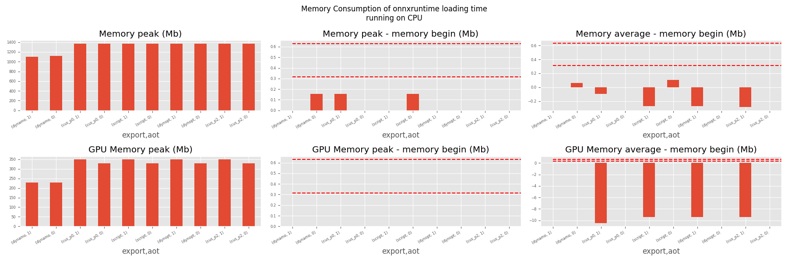
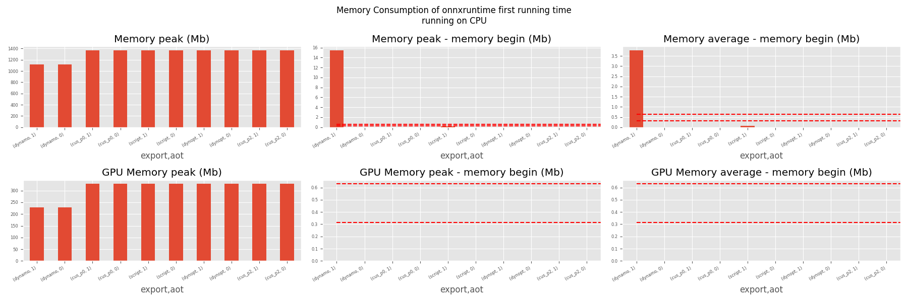

Note
Go to the end to download the full example code.
201: Evaluate different ways to export a torch model to ONNX¶
The example evaluates the performance of onnxruntime of a simple torch model after it was converted into ONNX through different processes:
TorchScript-based ONNX Exporter, let’s call it script
TorchDynamo-based ONNX Exporter, let’s call it dynamo
if available, the previous model but optimized, dynopt
a custom exporter cus_p0, this exporter supports a very limited set of models, as dynamo, it relies on torch.fx but the design is closer to what tensorflow-onnx does.
the same exporter but unused nodes were removed and constants were folded, cus_p2
To run the script:
python _doc/examples/plot_torch_export --help
The script takes around 12 minutes with a larger models.
Some helpers¶
from experimental_experiment.args import get_parsed_args
script_args = get_parsed_args(
"plot_torch_export",
description=__doc__,
scenarios={
"small": "small model to test",
"middle": "55Mb model",
"large": "1Gb model",
},
warmup=5,
repeat=5,
maxtime=(
2,
"maximum time to run a model to measure the computation time, "
"it is 0.1 when scenario is small",
),
expose="scenarios,repeat,warmup",
)
import contextlib
import itertools
import os
import platform
import pprint
import multiprocessing
import time
import cProfile
import pstats
import io
import warnings
import logging
from pstats import SortKey
try:
with warnings.catch_warnings():
warnings.simplefilter("ignore")
import onnxruntime
has_cuda = "CUDAExecutionProvider" in onnxruntime.get_available_providers()
except ImportError:
print("onnxruntime not available.")
import sys
sys.exit(0)
import numpy as np
import matplotlib.pyplot as plt
import pandas
import onnx
from onnx_array_api.plotting.text_plot import onnx_simple_text_plot
from onnx_array_api.profiling import profile2graph
import torch
from torch import nn
import torch.nn.functional as F
import experimental_experiment
from experimental_experiment.torch_interpreter import to_onnx
from experimental_experiment.xbuilder import OptimizationOptions
from experimental_experiment.plotting.memory import memory_peak_plot
from experimental_experiment.ext_test_case import measure_time, get_figure
from experimental_experiment.memory_peak import start_spying_on
from tqdm import tqdm
has_cuda = has_cuda and torch.cuda.is_available()
logging.disable(logging.ERROR)
def system_info():
obs = {}
obs["processor"] = platform.processor()
obs["cores"] = multiprocessing.cpu_count()
try:
obs["cuda"] = 1 if torch.cuda.is_available() else 0
obs["cuda_count"] = torch.cuda.device_count()
obs["cuda_name"] = torch.cuda.get_device_name()
obs["cuda_capa"] = torch.cuda.get_device_capability()
except (RuntimeError, AssertionError):
# no cuda
pass
return obs
pprint.pprint(system_info())
{'cores': 20,
'cuda': 1,
'cuda_capa': (8, 9),
'cuda_count': 1,
'cuda_name': 'NVIDIA GeForce RTX 4060 Laptop GPU',
'processor': 'x86_64'}
Scripts arguments
if script_args.scenario in (None, "small"):
script_args.maxtime = 0.1
print(f"scenario={script_args.scenario or 'small'}")
print(f"warmup={script_args.warmup}")
print(f"repeat={script_args.repeat}")
print(f"maxtime={script_args.maxtime}")
scenario=small
warmup=5
repeat=5
maxtime=0.1
The model¶
A simple model to convert.
class MyModelClass(nn.Module):
def __init__(self, scenario=script_args.scenario):
super().__init__()
if scenario == "middle":
self.large = False
self.conv1 = nn.Conv2d(1, 128, 5)
self.conv2 = nn.Conv2d(128, 16, 5)
self.fc1 = nn.Linear(13456, 1024)
self.fcs = []
self.fc2 = nn.Linear(1024, 128)
self.fc3 = nn.Linear(128, 10)
elif scenario in (None, "small"):
self.large = False
self.conv1 = nn.Conv2d(1, 16, 5)
self.conv2 = nn.Conv2d(16, 16, 5)
self.fc1 = nn.Linear(16, 512)
self.fcs = []
self.fc2 = nn.Linear(512, 128)
self.fc3 = nn.Linear(128, 10)
elif scenario in (None, "large"):
self.large = True
self.conv1 = nn.Conv2d(1, 128, 5)
self.conv2 = nn.Conv2d(128, 16, 5)
self.fc1 = nn.Linear(13456, 4096)
# torch script does not support loops.
self.fca = nn.Linear(4096, 4096)
self.fcb = nn.Linear(4096, 4096)
self.fcc = nn.Linear(4096, 4096)
self.fcd = nn.Linear(4096, 4096)
self.fce = nn.Linear(4096, 4096)
self.fcf = nn.Linear(4096, 4096)
self.fcg = nn.Linear(4096, 4096)
self.fch = nn.Linear(4096, 4096)
self.fci = nn.Linear(4096, 4096)
self.fck = nn.Linear(4096, 4096)
self.fcl = nn.Linear(4096, 4096)
self.fcm = nn.Linear(4096, 4096)
self.fcn = nn.Linear(4096, 4096)
# end of the unfolded loop.
self.fc2 = nn.Linear(4096, 128)
self.fc3 = nn.Linear(128, 10)
else:
raise ValueError(f"Unsupported scenario={scenario!r}.")
def forward(self, x):
x = F.max_pool2d(F.relu(self.conv1(x)), (2, 2))
x = F.max_pool2d(F.relu(self.conv2(x)), 2)
x = torch.flatten(x, 1)
x = F.relu(self.fc1(x))
if self.large:
# loop
x = F.relu(self.fca(x))
x = F.relu(self.fcb(x))
x = F.relu(self.fcc(x))
x = F.relu(self.fcd(x))
x = F.relu(self.fce(x))
x = F.relu(self.fcf(x))
x = F.relu(self.fcg(x))
x = F.relu(self.fch(x))
x = F.relu(self.fci(x))
x = F.relu(self.fck(x))
x = F.relu(self.fcl(x))
x = F.relu(self.fcm(x))
x = F.relu(self.fcn(x))
# end of the loop
x = F.relu(self.fc2(x))
x = self.fc3(x)
return x
def create_model_and_input(scenario=script_args.scenario):
if scenario == "middle":
shape = [1, 1, 128, 128]
elif scenario in (None, "small"):
shape = [1, 1, 16, 16]
elif scenario == "large":
shape = [1, 1, 128, 128]
else:
raise ValueError(f"Unsupported scenario={scenario!r}.")
input_tensor = torch.rand(*shape).to(torch.float32)
model = MyModelClass(scenario=scenario)
assert model(input_tensor) is not None
return model, input_tensor
def torch_model_size(model):
size_model = 0
for param in model.parameters():
size = param.numel() * torch.finfo(param.data.dtype).bits / 8
size_model += size
return size_model
model, input_tensor = create_model_and_input()
model_size = torch_model_size(model)
print(f"model size={model_size / 2 ** 20} Mb")
model size=0.31467437744140625 Mb
The exporters¶
def export_script(filename, model, *args):
with contextlib.redirect_stdout(io.StringIO()):
with warnings.catch_warnings():
warnings.simplefilter("ignore")
torch.onnx.export(model, *args, filename, input_names=["input"])
def export_dynamo(filename, model, *args):
with contextlib.redirect_stdout(io.StringIO()):
with warnings.catch_warnings():
warnings.simplefilter("ignore")
export_output = torch.onnx.export(model, args, dynamo=True)
export_output.save(filename)
def export_dynopt(filename, model, *args):
with contextlib.redirect_stdout(io.StringIO()):
with warnings.catch_warnings():
warnings.simplefilter("ignore")
export_output = torch.onnx.export(model, args, dynamo=True)
model_onnx = export_output.model_proto
from experimental_experiment.convert.convert_helper import (
optimize_model_proto_oxs,
)
optimized_model = optimize_model_proto_oxs(model_onnx)
with open(filename, "wb") as f:
f.write(optimized_model.SerializeToString())
def export_cus_p0(filename, model, *args):
onx = to_onnx(model, tuple(args), input_names=["input"])
with open(filename, "wb") as f:
f.write(onx.SerializeToString())
def export_cus_p2(filename, model, *args):
onx = to_onnx(
model,
tuple(args),
input_names=["input"],
options=OptimizationOptions(
remove_unused=True,
constant_folding=True,
),
)
with open(filename, "wb") as f:
f.write(onx.SerializeToString())
Let’s check they are working.
export_functions = [
export_script,
export_dynamo,
export_dynopt,
export_cus_p0,
export_cus_p2,
]
exporters = {f.__name__.replace("export_", ""): f for f in export_functions}
supported_exporters = {}
for k, v in exporters.items():
print(f"run exporter {k}")
filename = f"plot_torch_export_{k}.onnx"
try:
v(filename, model, input_tensor)
except Exception as e:
print(f"skipped due to {str(e)[:1000]}")
continue
supported_exporters[k] = v
print(f"done. size={os.stat(filename).st_size / 2 ** 20:1.0f} Mb")
run exporter script
done. size=0 Mb
run exporter dynamo
done. size=0 Mb
run exporter dynopt
done. size=0 Mb
run exporter cus_p0
done. size=0 Mb
run exporter cus_p2
done. size=0 Mb
Exporter memory¶
def flatten(ps):
obs = ps["cpu"].to_dict(unit=2**20)
if "gpus" in ps:
for i, g in enumerate(ps["gpus"]):
for k, v in g.to_dict(unit=2**20).items():
obs[f"gpu{i}_{k}"] = v
return obs
data = []
for k, v in supported_exporters.items():
print(f"run exporter for memory {k}")
filename = f"plot_torch_export_{k}.onnx"
if has_cuda:
torch.cuda.set_device(0)
stat = start_spying_on(cuda=1 if has_cuda else 0)
v(filename, model, input_tensor)
obs = flatten(stat.stop())
print("done.")
onx = onnx.load(filename)
obs.update(dict(nodes=len(onx.graph.node), export=k))
data.append(obs)
stat = start_spying_on(cuda=1 if has_cuda else 0)
exported_mod = torch.export.export(model, (input_tensor,))
obs = flatten(stat.stop())
obs.update(dict(export="torch.fx"))
data.append(obs)
run exporter for memory script
done.
run exporter for memory dynamo
done.
run exporter for memory dynopt
done.
run exporter for memory cus_p0
done.
run exporter for memory cus_p2
done.
The result.
df1 = pandas.DataFrame(data)
df1.to_csv("plot_torch_export_memory.csv", index=False)
df1.to_excel("plot_torch_export_memory.xlsx", index=False)
print(df1)
ax = memory_peak_plot(
data,
bars=[model_size * i / 2**20 for i in range(1, 5)],
suptitle=f"Memory Consumption of the Export\n"
f"model size={model_size / 2**20:1.0f} Mb",
)
get_figure(ax).savefig("plot_torch_export_memory.png")
peak mean n begin end gpu0_peak gpu0_mean gpu0_n gpu0_begin gpu0_end nodes export
0 3280.113281 3278.540365 12 3280.113281 3278.242188 412.617188 412.617188 12 412.617188 412.617188 12.0 script
1 3278.367188 3278.319994 49 3278.250000 3278.367188 412.617188 412.617188 49 412.617188 412.617188 17.0 dynamo
2 3279.253906 3278.404236 64 3278.367188 3279.253906 412.617188 412.617188 64 412.617188 412.617188 16.0 dynopt
3 3279.308594 3279.306743 19 3279.304688 3279.308594 412.617188 412.617188 19 412.617188 412.617188 15.0 cus_p0
4 3279.308594 3279.308594 23 3279.308594 3279.308594 412.617188 412.617188 23 412.617188 412.617188 15.0 cus_p2
5 3279.308594 3279.308594 24 3279.308594 3279.308594 412.617188 412.617188 24 412.617188 412.617188 NaN torch.fx
Exporter speed¶
data = []
for k, v in supported_exporters.items():
print(f"run exporter {k}")
filename = f"plot_torch_export_{k}.onnx"
times = []
for _ in range(script_args.repeat):
begin = time.perf_counter()
v(filename, model, input_tensor)
duration = time.perf_counter() - begin
times.append(duration)
onx = onnx.load(filename)
print("done.")
data.append(
dict(
export=k,
time=np.mean(times),
min=min(times),
max=max(times),
first=times[0],
last=times[-1],
std=np.std(times),
nodes=len(onx.graph.node),
)
)
run exporter script
done.
run exporter dynamo
done.
run exporter dynopt
done.
run exporter cus_p0
done.
run exporter cus_p2
done.
The last export to measure time torch spends in export the model before any other export can begin the translation except the first one.
times = []
for _ in range(script_args.repeat):
begin = time.perf_counter()
exported_mod = torch.export.export(model, (input_tensor,))
duration = time.perf_counter() - begin
times.append(duration)
data.append(
dict(
export="torch.fx",
time=np.mean(times),
min=min(times),
max=max(times),
first=times[0],
last=times[-1],
std=np.std(times),
nodes=len(onx.graph.node),
)
)
The result.
df1 = pandas.DataFrame(data)
df1.to_csv("plot_torch_export_time.csv", index=False)
df1.to_excel("plot_torch_export_time.xlsx", index=False)
print(df1)
fig, ax = plt.subplots(1, 1)
dfi = df1[["export", "time", "std"]].set_index("export")
dfi["time"].plot.bar(ax=ax, title="Export time", yerr=dfi["std"], rot=30)
fig.tight_layout()
fig.savefig("plot_torch_export_time.png")
export time min max first last std nodes
0 script 0.049203 0.033353 0.088767 0.033353 0.037720 0.020326 12
1 dynamo 0.731769 0.488381 1.248005 0.679641 0.488381 0.266784 17
2 dynopt 0.596664 0.408775 1.056087 0.516100 0.408775 0.232853 16
3 cus_p0 0.154543 0.117416 0.244530 0.117416 0.244530 0.045991 15
4 cus_p2 0.163657 0.110376 0.224161 0.214465 0.110376 0.048244 15
5 torch.fx 0.104116 0.102143 0.110415 0.110415 0.102396 0.003179 15
Exporter Profiling¶
def clean_text(text):
pathes = [
os.path.abspath(
os.path.normpath(os.path.join(os.path.dirname(torch.__file__), ".."))
),
os.path.abspath(
os.path.normpath(os.path.join(os.path.dirname(onnx.__file__), ".."))
),
os.path.abspath(
os.path.normpath(
os.path.join(os.path.dirname(experimental_experiment.__file__), "..")
)
),
]
for p in pathes:
text = text.replace(p, "")
text = text.replace("experimental_experiment", "experimental_experiment".upper())
return text
def profile_function(name, export_function, verbose=False):
print(f"profile {name}: {export_function}")
pr = cProfile.Profile()
pr.enable()
for _ in range(script_args.repeat):
export_function("dummyc.onnx", model, input_tensor)
pr.disable()
s = io.StringIO()
sortby = SortKey.CUMULATIVE
ps = pstats.Stats(pr, stream=s).sort_stats(sortby)
ps.print_stats()
raw = s.getvalue()
text = "\n".join(raw.split("\n")[:200])
if verbose:
print(text)
with open(f"plot_torch_export_profile_{name}.txt", "w") as f:
f.write(raw)
root, nodes = profile2graph(ps, clean_text=clean_text)
text = root.to_text()
with open(f"plot_torch_export_profile_{name}_h.txt", "w") as f:
f.write(text)
print("done.")
profile_function("custom0", export_cus_p0, True)
profile_function("custom2", export_cus_p2)
profile custom0: <function export_cus_p0 at 0x7f216472beb0>
1298791 function calls (1261361 primitive calls) in 1.024 seconds
Ordered by: cumulative time
ncalls tottime percall cumtime percall filename:lineno(function)
5 0.000 0.000 1.051 0.210 /home/xadupre/github/experimental-experiment/_doc/examples/plot_torch_export_201.py:272(export_cus_p0)
5 0.000 0.000 1.046 0.209 /home/xadupre/github/experimental-experiment/experimental_experiment/torch_interpreter/onnx_export.py:403(to_onnx)
5 0.000 0.000 0.946 0.189 /home/xadupre/github/experimental-experiment/experimental_experiment/torch_interpreter/onnx_export.py:200(_make_builder_interpreter)
5 0.000 0.000 0.944 0.189 /home/xadupre/github/experimental-experiment/experimental_experiment/torch_interpreter/onnx_export.py:136(_export)
5 0.000 0.000 0.944 0.189 /home/xadupre/vv/this/lib/python3.10/site-packages/torch/export/__init__.py:261(export)
5 0.000 0.000 0.944 0.189 /home/xadupre/vv/this/lib/python3.10/site-packages/torch/export/_trace.py:985(wrapper)
5 0.000 0.000 0.944 0.189 /home/xadupre/vv/this/lib/python3.10/site-packages/torch/export/exported_program.py:111(wrapper)
5 0.000 0.000 0.944 0.189 /home/xadupre/vv/this/lib/python3.10/site-packages/torch/export/_trace.py:1801(_export)
5 0.000 0.000 0.929 0.186 /home/xadupre/vv/this/lib/python3.10/site-packages/torch/export/_trace.py:1211(_strict_export)
5 0.000 0.000 0.929 0.186 /home/xadupre/vv/this/lib/python3.10/site-packages/torch/export/_trace.py:1239(_strict_export_lower_to_aten_ir)
120/55 0.001 0.000 0.477 0.009 /home/xadupre/vv/this/lib/python3.10/site-packages/torch/nn/modules/module.py:1732(_wrapped_call_impl)
120/55 0.001 0.000 0.477 0.009 /home/xadupre/vv/this/lib/python3.10/site-packages/torch/nn/modules/module.py:1740(_call_impl)
5 0.001 0.000 0.467 0.093 /home/xadupre/vv/this/lib/python3.10/site-packages/torch/export/_trace.py:592(_export_to_aten_ir)
5 0.000 0.000 0.440 0.088 /home/xadupre/vv/this/lib/python3.10/site-packages/torch/export/_trace.py:520(_export_to_torch_ir)
5 0.000 0.000 0.437 0.087 /home/xadupre/vv/this/lib/python3.10/site-packages/torch/_dynamo/eval_frame.py:1304(inner)
5 0.000 0.000 0.423 0.085 /home/xadupre/vv/this/lib/python3.10/site-packages/torch/_functorch/aot_autograd.py:1110(aot_export_module)
5 0.000 0.000 0.422 0.084 /home/xadupre/vv/this/lib/python3.10/site-packages/torch/_functorch/aot_autograd.py:1416(_aot_export_function)
5 0.000 0.000 0.421 0.084 /home/xadupre/vv/this/lib/python3.10/site-packages/torch/_functorch/aot_autograd.py:514(create_aot_dispatcher_function)
5 0.001 0.000 0.417 0.083 /home/xadupre/vv/this/lib/python3.10/site-packages/torch/_functorch/aot_autograd.py:527(_create_aot_dispatcher_function)
5 0.000 0.000 0.395 0.079 /home/xadupre/vv/this/lib/python3.10/site-packages/torch/_dynamo/eval_frame.py:431(_fn)
5 0.000 0.000 0.336 0.067 /home/xadupre/vv/this/lib/python3.10/site-packages/torch/_dynamo/convert_frame.py:1222(__call__)
5 0.001 0.000 0.335 0.067 /home/xadupre/vv/this/lib/python3.10/site-packages/torch/_dynamo/convert_frame.py:438(__call__)
5 0.001 0.000 0.334 0.067 /home/xadupre/vv/this/lib/python3.10/site-packages/torch/_dynamo/convert_frame.py:581(_compile)
5 0.000 0.000 0.329 0.066 /home/xadupre/vv/this/lib/python3.10/site-packages/torch/_dynamo/convert_frame.py:667(compile_inner)
5 0.000 0.000 0.327 0.065 /home/xadupre/vv/this/lib/python3.10/site-packages/torch/_utils_internal.py:81(wrapper_function)
5 0.000 0.000 0.327 0.065 /home/xadupre/vv/this/lib/python3.10/site-packages/torch/_dynamo/convert_frame.py:677(_compile_inner)
2560/2170 0.003 0.000 0.309 0.000 /home/xadupre/vv/this/lib/python3.10/site-packages/torch/utils/_stats.py:16(wrapper)
2345 0.003 0.000 0.258 0.000 /home/xadupre/vv/this/lib/python3.10/site-packages/torch/_subclasses/fake_tensor.py:1225(__torch_dispatch__)
5 0.000 0.000 0.257 0.051 /home/xadupre/vv/this/lib/python3.10/site-packages/torch/_dynamo/bytecode_transformation.py:1314(transform_code_object)
2345 0.011 0.000 0.254 0.000 /home/xadupre/vv/this/lib/python3.10/site-packages/torch/_subclasses/fake_tensor.py:1663(dispatch)
5 0.000 0.000 0.248 0.050 /home/xadupre/vv/this/lib/python3.10/site-packages/torch/_dynamo/convert_frame.py:193(_fn)
5 0.000 0.000 0.245 0.049 /home/xadupre/vv/this/lib/python3.10/site-packages/torch/_dynamo/convert_frame.py:616(transform)
15/10 0.000 0.000 0.237 0.024 /home/xadupre/vv/this/lib/python3.10/site-packages/torch/_dynamo/eval_frame.py:628(_fn)
800 0.006 0.000 0.236 0.000 /home/xadupre/vv/this/lib/python3.10/site-packages/torch/_subclasses/fake_tensor.py:1309(_cached_dispatch_impl)
5 0.000 0.000 0.229 0.046 /home/xadupre/vv/this/lib/python3.10/site-packages/torch/_functorch/_aot_autograd/jit_compile_runtime_wrappers.py:85(aot_dispatch_export)
5 0.000 0.000 0.228 0.046 /home/xadupre/vv/this/lib/python3.10/site-packages/torch/_functorch/_aot_autograd/dispatch_and_compile_graph.py:64(aot_dispatch_base_graph)
15 0.001 0.000 0.224 0.015 /home/xadupre/vv/this/lib/python3.10/site-packages/torch/fx/interpreter.py:107(run)
10 0.000 0.000 0.221 0.022 /home/xadupre/vv/this/lib/python3.10/site-packages/torch/_functorch/_aot_autograd/utils.py:176(flat_fn)
430/425 0.012 0.000 0.221 0.001 /home/xadupre/vv/this/lib/python3.10/site-packages/torch/_subclasses/functional_tensor.py:368(__torch_dispatch__)
10 0.000 0.000 0.220 0.022 /home/xadupre/vv/this/lib/python3.10/site-packages/torch/_functorch/_aot_autograd/traced_function_transforms.py:848(functional_call)
5 0.000 0.000 0.219 0.044 /home/xadupre/vv/this/lib/python3.10/site-packages/torch/_dynamo/symbolic_convert.py:2775(run)
5 0.000 0.000 0.219 0.044 /home/xadupre/vv/this/lib/python3.10/site-packages/torch/_dynamo/symbolic_convert.py:975(run)
280 0.001 0.000 0.219 0.001 /home/xadupre/vv/this/lib/python3.10/site-packages/torch/_dynamo/symbolic_convert.py:863(step)
210 0.001 0.000 0.215 0.001 /home/xadupre/vv/this/lib/python3.10/site-packages/torch/fx/interpreter.py:185(run_node)
140 0.001 0.000 0.211 0.002 /home/xadupre/vv/this/lib/python3.10/site-packages/torch/fx/experimental/symbolic_shapes.py:5577(run_node)
5 0.000 0.000 0.186 0.037 /home/xadupre/vv/this/lib/python3.10/site-packages/torch/_functorch/_aot_autograd/dispatch_and_compile_graph.py:45(_create_graph)
5 0.000 0.000 0.184 0.037 /home/xadupre/vv/this/lib/python3.10/site-packages/torch/fx/experimental/proxy_tensor.py:2123(wrapped)
5 0.000 0.000 0.184 0.037 /home/xadupre/vv/this/lib/python3.10/site-packages/torch/fx/experimental/proxy_tensor.py:2061(trace)
5 0.000 0.000 0.183 0.037 /home/xadupre/vv/this/lib/python3.10/site-packages/torch/fx/experimental/proxy_tensor.py:1968(_trace_inner)
5 0.000 0.000 0.179 0.036 /home/xadupre/vv/this/lib/python3.10/site-packages/torch/_compile.py:22(inner)
5 0.000 0.000 0.179 0.036 /home/xadupre/vv/this/lib/python3.10/site-packages/torch/fx/experimental/proxy_tensor.py:1126(dispatch_trace)
60 0.000 0.000 0.178 0.003 /home/xadupre/vv/this/lib/python3.10/site-packages/torch/_dynamo/symbolic_convert.py:562(wrapper)
60 0.000 0.000 0.177 0.003 /home/xadupre/vv/this/lib/python3.10/site-packages/torch/_dynamo/symbolic_convert.py:1594(CALL_FUNCTION)
60 0.000 0.000 0.176 0.003 /home/xadupre/vv/this/lib/python3.10/site-packages/torch/_dynamo/symbolic_convert.py:806(call_function)
5 0.000 0.000 0.167 0.033 /home/xadupre/vv/this/lib/python3.10/site-packages/torch/fx/experimental/proxy_tensor.py:1643(trace)
5 0.000 0.000 0.167 0.033 /home/xadupre/vv/this/lib/python3.10/site-packages/torch/fx/_symbolic_trace.py:687(trace)
65 0.000 0.000 0.164 0.003 /home/xadupre/vv/this/lib/python3.10/site-packages/torch/_dynamo/variables/builder.py:2036(wrap_fx_proxy)
65 0.002 0.000 0.164 0.003 /home/xadupre/vv/this/lib/python3.10/site-packages/torch/_dynamo/variables/builder.py:2098(wrap_fx_proxy_cls)
5 0.000 0.000 0.151 0.030 /home/xadupre/vv/this/lib/python3.10/site-packages/torch/fx/experimental/proxy_tensor.py:1176(wrapped)
5 0.001 0.000 0.147 0.029 /home/xadupre/vv/this/lib/python3.10/site-packages/torch/_functorch/_aot_autograd/collect_metadata_analysis.py:147(inner)
60 0.001 0.000 0.147 0.002 /home/xadupre/vv/this/lib/python3.10/site-packages/torch/_dynamo/utils.py:1987(get_fake_value)
90 0.000 0.000 0.147 0.002 /home/xadupre/vv/this/lib/python3.10/site-packages/torch/_dynamo/utils.py:1593(wrap_fake_exception)
5 0.000 0.000 0.136 0.027 /home/xadupre/vv/this/lib/python3.10/site-packages/torch/_functorch/_aot_autograd/traced_function_transforms.py:663(inner_fn)
5 0.000 0.000 0.136 0.027 /home/xadupre/vv/this/lib/python3.10/site-packages/torch/_functorch/_aot_autograd/traced_function_transforms.py:396(_functionalized_f_helper)
5 0.000 0.000 0.127 0.025 /home/xadupre/vv/this/lib/python3.10/site-packages/torch/_functorch/_aot_autograd/traced_function_transforms.py:76(inner_fn)
25 0.000 0.000 0.126 0.005 /home/xadupre/vv/this/lib/python3.10/site-packages/torch/_dynamo/variables/nn_module.py:341(call_function)
1920 0.003 0.000 0.120 0.000 /home/xadupre/vv/this/lib/python3.10/site-packages/torch/fx/experimental/proxy_tensor.py:1225(__torch_function__)
70 0.000 0.000 0.117 0.002 /home/xadupre/vv/this/lib/python3.10/site-packages/torch/fx/interpreter.py:257(call_function)
1035/495 0.002 0.000 0.115 0.000 /home/xadupre/vv/this/lib/python3.10/site-packages/torch/utils/_pytree.py:923(tree_map)
1920 0.002 0.000 0.115 0.000 /home/xadupre/vv/this/lib/python3.10/site-packages/torch/fx/experimental/proxy_tensor.py:1250(__torch_function__)
125/60 0.001 0.000 0.110 0.002 /home/xadupre/vv/this/lib/python3.10/site-packages/torch/_ops.py:823(handler)
4295/715 0.009 0.000 0.109 0.000 /home/xadupre/vv/this/lib/python3.10/site-packages/torch/utils/_pytree.py:801(unflatten)
125/60 0.001 0.000 0.107 0.002 /home/xadupre/vv/this/lib/python3.10/site-packages/torch/_library/utils.py:267(handle_dispatch_mode)
810/690 0.001 0.000 0.104 0.000 /home/xadupre/vv/this/lib/python3.10/site-packages/torch/_ops.py:715(__call__)
25 0.000 0.000 0.096 0.004 /home/xadupre/vv/this/lib/python3.10/site-packages/torch/_dynamo/utils.py:1604(deepcopy_to_fake_tensor)
1530/35 0.003 0.000 0.095 0.003 /usr/lib/python3.10/copy.py:128(deepcopy)
440/140 0.001 0.000 0.095 0.001 /usr/lib/python3.10/copy.py:259(_reconstruct)
25 0.000 0.000 0.095 0.004 /home/xadupre/vv/this/lib/python3.10/site-packages/torch/_dynamo/utils.py:1606(<lambda>)
100/25 0.001 0.000 0.094 0.004 /usr/lib/python3.10/copy.py:227(_deepcopy_dict)
120/80 0.000 0.000 0.093 0.001 /home/xadupre/vv/this/lib/python3.10/site-packages/torch/nn/functional.py:1693(relu)
65 0.001 0.000 0.092 0.001 /home/xadupre/vv/this/lib/python3.10/site-packages/torch/fx/graph_module.py:754(recompile)
80 0.004 0.000 0.092 0.001 {built-in method torch.relu}
50 0.001 0.000 0.088 0.002 /home/xadupre/vv/this/lib/python3.10/site-packages/torch/nn/parameter.py:63(__deepcopy__)
250 0.001 0.000 0.086 0.000 /home/xadupre/vv/this/lib/python3.10/site-packages/torch/_subclasses/fake_tensor.py:2348(__torch_function__)
800 0.003 0.000 0.085 0.000 /home/xadupre/vv/this/lib/python3.10/site-packages/torch/_subclasses/fake_tensor.py:1352(_cache_key)
50 0.000 0.000 0.085 0.002 /home/xadupre/vv/this/lib/python3.10/site-packages/torch/fx/interpreter.py:299(call_module)
70 0.000 0.000 0.082 0.001 /home/xadupre/vv/this/lib/python3.10/site-packages/torch/fx/graph.py:1397(python_code)
685 0.010 0.000 0.081 0.000 /home/xadupre/vv/this/lib/python3.10/site-packages/torch/_subclasses/fake_tensor.py:1560(_output_from_cache_entry)
3025/850 0.011 0.000 0.078 0.000 /home/xadupre/vv/this/lib/python3.10/site-packages/torch/_subclasses/fake_tensor.py:1428(_prep_args_for_hash)
5 0.000 0.000 0.076 0.015 /home/xadupre/github/experimental-experiment/experimental_experiment/xbuilder/graph_builder.py:3004(to_onnx)
880 0.002 0.000 0.072 0.000 /home/xadupre/vv/this/lib/python3.10/site-packages/torch/utils/_pytree.py:1130(tree_map_only)
225/175 0.003 0.000 0.072 0.000 {method 'detach' of 'torch._C.TensorBase' objects}
60 0.000 0.000 0.071 0.001 /home/xadupre/vv/this/lib/python3.10/site-packages/torch/nn/modules/linear.py:124(forward)
90/60 0.005 0.000 0.070 0.001 {built-in method torch._C._nn.linear}
5 0.000 0.000 0.070 0.014 /home/xadupre/vv/this/lib/python3.10/site-packages/torch/_dynamo/guards.py:2216(__init__)
9490/9030 0.005 0.000 0.068 0.000 {built-in method builtins.next}
60 0.000 0.000 0.068 0.001 /home/xadupre/vv/this/lib/python3.10/site-packages/torch/fx/experimental/proxy_tensor.py:1309(__torch_dispatch__)
70 0.000 0.000 0.067 0.001 /home/xadupre/vv/this/lib/python3.10/site-packages/torch/fx/graph.py:1465(_python_code)
120/90 0.000 0.000 0.067 0.001 /home/xadupre/vv/this/lib/python3.10/site-packages/torch/_guards.py:279(create)
70 0.008 0.000 0.067 0.001 /home/xadupre/vv/this/lib/python3.10/site-packages/torch/fx/graph.py:376(_gen_python_code)
60 0.002 0.000 0.067 0.001 /home/xadupre/vv/this/lib/python3.10/site-packages/torch/fx/experimental/proxy_tensor.py:760(proxy_call)
230 0.002 0.000 0.065 0.000 /home/xadupre/vv/this/lib/python3.10/site-packages/torch/_subclasses/fake_tensor.py:324(from_real_tensor)
230/180 0.025 0.000 0.065 0.000 {method 'clone' of 'torch._C.TensorBase' objects}
155 0.002 0.000 0.061 0.000 /home/xadupre/vv/this/lib/python3.10/site-packages/torch/_subclasses/fake_tensor.py:746(__torch_dispatch__)
170 0.004 0.000 0.061 0.000 /home/xadupre/vv/this/lib/python3.10/site-packages/torch/_subclasses/meta_utils.py:1588(__call__)
115 0.003 0.000 0.059 0.001 /home/xadupre/vv/this/lib/python3.10/site-packages/torch/_subclasses/fake_tensor.py:1696(_dispatch_impl)
5 0.000 0.000 0.058 0.012 /home/xadupre/vv/this/lib/python3.10/site-packages/torch/_dynamo/eval_frame.py:1354(result_capturing_wrapper)
60/30 0.000 0.000 0.056 0.002 /home/xadupre/vv/this/lib/python3.10/site-packages/torch/overrides.py:1666(handle_torch_function)
50 0.000 0.000 0.052 0.001 /home/xadupre/vv/this/lib/python3.10/site-packages/torch/fx/_symbolic_trace.py:479(call_module)
60/40 0.000 0.000 0.052 0.001 /home/xadupre/vv/this/lib/python3.10/site-packages/torch/_jit_internal.py:614(fn)
60/40 0.000 0.000 0.052 0.001 /home/xadupre/vv/this/lib/python3.10/site-packages/torch/nn/functional.py:807(_max_pool2d)
40 0.003 0.000 0.051 0.001 {built-in method torch.max_pool2d}
110 0.000 0.000 0.050 0.000 /home/xadupre/vv/this/lib/python3.10/site-packages/torch/_functorch/_aot_autograd/functional_utils.py:30(to_fun)
110 0.001 0.000 0.050 0.000 /home/xadupre/vv/this/lib/python3.10/site-packages/torch/_subclasses/functional_tensor.py:227(to_functional)
25 0.000 0.000 0.050 0.002 /home/xadupre/vv/this/lib/python3.10/site-packages/torch/fx/_symbolic_trace.py:791(module_call_wrapper)
25 0.000 0.000 0.049 0.002 /home/xadupre/vv/this/lib/python3.10/site-packages/torch/fx/experimental/proxy_tensor.py:1693(call_module)
25 0.000 0.000 0.048 0.002 /home/xadupre/vv/this/lib/python3.10/site-packages/torch/fx/_symbolic_trace.py:793(forward)
35 0.001 0.000 0.048 0.001 /home/xadupre/vv/this/lib/python3.10/site-packages/torch/_dynamo/variables/torch.py:879(call_function)
60 0.000 0.000 0.046 0.001 /home/xadupre/vv/this/lib/python3.10/site-packages/torch/_dynamo/utils.py:2037(<lambda>)
60 0.000 0.000 0.046 0.001 /home/xadupre/vv/this/lib/python3.10/site-packages/torch/_dynamo/utils.py:2127(run_node)
50 0.000 0.000 0.046 0.001 /home/xadupre/vv/this/lib/python3.10/site-packages/torch/nn/parameter.py:40(__new__)
5 0.000 0.000 0.044 0.009 /home/xadupre/github/experimental-experiment/experimental_experiment/xbuilder/graph_builder.py:3157(optimize)
40 0.000 0.000 0.044 0.001 /home/xadupre/vv/this/lib/python3.10/site-packages/torch/nn/modules/conv.py:553(forward)
40 0.000 0.000 0.043 0.001 /home/xadupre/vv/this/lib/python3.10/site-packages/torch/nn/modules/conv.py:536(_conv_forward)
60/40 0.004 0.000 0.043 0.001 {built-in method torch.conv2d}
5 0.000 0.000 0.043 0.009 /home/xadupre/vv/this/lib/python3.10/site-packages/torch/_functorch/functional_call.py:11(functional_call)
5 0.000 0.000 0.043 0.009 /home/xadupre/vv/this/lib/python3.10/site-packages/torch/nn/utils/stateless.py:264(_functional_call)
55 0.000 0.000 0.043 0.001 /home/xadupre/vv/this/lib/python3.10/site-packages/torch/_functorch/_aot_autograd/collect_metadata_analysis.py:137(_to_fun)
5 0.000 0.000 0.042 0.008 /home/xadupre/vv/this/lib/python3.10/site-packages/torch/fx/_lazy_graph_module.py:115(_lazy_forward)
5 0.000 0.000 0.041 0.008 /home/xadupre/github/experimental-experiment/experimental_experiment/xbuilder/graph_builder.py:3432(optimize_with_patterns)
165 0.000 0.000 0.041 0.000 /home/xadupre/vv/this/lib/python3.10/site-packages/torch/_subclasses/fake_tensor.py:2247(from_tensor)
4590/4365 0.003 0.000 0.040 0.000 /usr/lib/python3.10/contextlib.py:130(__enter__)
5 0.002 0.000 0.040 0.008 /home/xadupre/github/experimental-experiment/experimental_experiment/xoptim/graph_builder_optim.py:1004(optimize)
65 0.003 0.000 0.039 0.001 {built-in method torch.tensor}
5 0.000 0.000 0.039 0.008 /home/xadupre/vv/this/lib/python3.10/site-packages/torch/_dynamo/guards.py:1810(SHAPE_ENV)
234245/231595 0.030 0.000 0.037 0.000 {built-in method builtins.isinstance}
10 0.000 0.000 0.036 0.004 /home/xadupre/vv/this/lib/python3.10/site-packages/torch/_decomp/decompositions_for_rng.py:132(reset)
30 0.000 0.000 0.036 0.001 /home/xadupre/vv/this/lib/python3.10/site-packages/torch/_decomp/decompositions_for_rng.py:74(__init__)
30 0.000 0.000 0.035 0.001 /home/xadupre/vv/this/lib/python3.10/site-packages/torch/_decomp/decompositions_for_rng.py:77(reset)
5 0.000 0.000 0.035 0.007 /home/xadupre/vv/this/lib/python3.10/site-packages/torch/fx/graph_module.py:783(call_wrapped)
5 0.000 0.000 0.035 0.007 /home/xadupre/vv/this/lib/python3.10/site-packages/torch/fx/graph_module.py:343(__call__)
925 0.012 0.000 0.034 0.000 /home/xadupre/vv/this/lib/python3.10/site-packages/torch/_subclasses/fake_tensor.py:935(_flatten_into)
1410 0.001 0.000 0.034 0.000 /home/xadupre/vv/this/lib/python3.10/site-packages/torch/utils/_pytree.py:866(tree_flatten)
4590/4365 0.003 0.000 0.034 0.000 /usr/lib/python3.10/contextlib.py:139(__exit__)
1195 0.001 0.000 0.033 0.000 /home/xadupre/vv/this/lib/python3.10/site-packages/torch/utils/_pytree.py:1079(wrapped)
5180/1410 0.009 0.000 0.033 0.000 /home/xadupre/vv/this/lib/python3.10/site-packages/torch/utils/_pytree.py:845(_tree_flatten_helper)
925 0.009 0.000 0.032 0.000 /home/xadupre/vv/this/lib/python3.10/site-packages/torch/_subclasses/fake_tensor.py:955(extract_tensor_metadata)
610/540 0.002 0.000 0.032 0.000 /home/xadupre/vv/this/lib/python3.10/site-packages/torch/nn/modules/module.py:1935(__setattr__)
25 0.001 0.000 0.032 0.001 /home/xadupre/vv/this/lib/python3.10/site-packages/torch/fx/graph_module.py:397(__init__)
110 0.001 0.000 0.031 0.000 /home/xadupre/vv/this/lib/python3.10/site-packages/torch/_dynamo/variables/builder.py:366(__call__)
170 0.005 0.000 0.030 0.000 /home/xadupre/vv/this/lib/python3.10/site-packages/torch/_subclasses/meta_utils.py:687(meta_tensor)
1050 0.010 0.000 0.030 0.000 /home/xadupre/vv/this/lib/python3.10/site-packages/torch/_subclasses/fake_tensor.py:660(__new__)
240 0.001 0.000 0.030 0.000 /home/xadupre/vv/this/lib/python3.10/site-packages/torch/fx/proxy.py:194(create_proxy)
1380 0.005 0.000 0.030 0.000 /home/xadupre/vv/this/lib/python3.10/site-packages/torch/fx/graph.py:574(emit_node)
435 0.006 0.000 0.030 0.000 /home/xadupre/github/experimental-experiment/experimental_experiment/xoptim/patterns_api.py:115(enumerate_matches)
65 0.003 0.000 0.028 0.000 /home/xadupre/vv/this/lib/python3.10/site-packages/torch/_dynamo/variables/builder.py:526(_wrap)
25 0.000 0.000 0.028 0.001 /home/xadupre/vv/this/lib/python3.10/site-packages/torch/fx/graph_module.py:508(graph)
5 0.001 0.000 0.027 0.005 /home/xadupre/github/experimental-experiment/experimental_experiment/xbuilder/graph_builder.py:2649(_build_initializers)
5 0.000 0.000 0.025 0.005 /home/xadupre/vv/this/lib/python3.10/site-packages/torch/_dynamo/symbolic_convert.py:2647(__init__)
50 0.002 0.000 0.025 0.000 /home/xadupre/github/experimental-experiment/experimental_experiment/xbuilder/model_container.py:48(proto_from_array)
110 0.002 0.000 0.025 0.000 {built-in method torch._to_functional_tensor}
5 0.000 0.000 0.025 0.005 /home/xadupre/vv/this/lib/python3.10/site-packages/torch/_dynamo/eval_frame.py:1026(rewrite_signature)
55 0.000 0.000 0.024 0.000 /home/xadupre/vv/this/lib/python3.10/site-packages/torch/_functorch/_aot_autograd/dispatch_and_compile_graph.py:152(<lambda>)
5 0.000 0.000 0.022 0.004 /home/xadupre/github/experimental-experiment/experimental_experiment/xbuilder/graph_builder.py:2978(process)
90 0.001 0.000 0.022 0.000 /home/xadupre/vv/this/lib/python3.10/site-packages/torch/_dynamo/guards.py:1323(ID_MATCH)
5 0.000 0.000 0.022 0.004 /home/xadupre/vv/this/lib/python3.10/site-packages/torch/_dynamo/guards.py:1134(add_python_lambda_leaf_guard_to_root)
170 0.006 0.000 0.022 0.000 /home/xadupre/vv/this/lib/python3.10/site-packages/torch/_subclasses/meta_utils.py:211(describe_tensor)
2460/935 0.002 0.000 0.022 0.000 /home/xadupre/vv/this/lib/python3.10/site-packages/torch/utils/_pytree.py:859(<listcomp>)
120 0.001 0.000 0.022 0.000 /home/xadupre/github/experimental-experiment/experimental_experiment/torch_interpreter/interpreter.py:66(run_node)
250 0.002 0.000 0.021 0.000 /home/xadupre/vv/this/lib/python3.10/site-packages/torch/fx/proxy.py:134(create_node)
6715 0.004 0.000 0.021 0.000 /home/xadupre/vv/this/lib/python3.10/site-packages/torch/_subclasses/meta_utils.py:146(is_sparse_any)
65 0.000 0.000 0.020 0.000 /home/xadupre/vv/this/lib/python3.10/site-packages/torch/fx/experimental/proxy_tensor.py:592(track_tensor_tree)
5 0.000 0.000 0.020 0.004 /home/xadupre/vv/this/lib/python3.10/site-packages/torch/_dynamo/guards.py:2605(build_guard_function)
275 0.004 0.000 0.020 0.000 /home/xadupre/vv/this/lib/python3.10/site-packages/torch/_subclasses/functional_tensor.py:117(__new__)
120/65 0.000 0.000 0.020 0.000 /home/xadupre/vv/this/lib/python3.10/site-packages/torch/fx/experimental/proxy_tensor.py:614(wrap_with_proxy)
4860 0.003 0.000 0.019 0.000 /home/xadupre/vv/this/lib/python3.10/site-packages/torch/fx/node.py:777(map_arg)
30/20 0.001 0.000 0.019 0.001 {built-in method torch.flatten}
10 0.000 0.000 0.019 0.002 /home/xadupre/vv/this/lib/python3.10/site-packages/torch/_export/passes/replace_with_hop_pass_util.py:151(_replace_with_hop_pass_helper)
9265/5415 0.009 0.000 0.018 0.000 /home/xadupre/vv/this/lib/python3.10/site-packages/torch/fx/node.py:785(map_aggregate)
5 0.000 0.000 0.018 0.004 /home/xadupre/vv/this/lib/python3.10/site-packages/torch/_decomp/decompositions_for_rng.py:129(__exit__)
5010 0.007 0.000 0.018 0.000 /home/xadupre/vv/this/lib/python3.10/site-packages/torch/fx/node.py:758(__setattr__)
5 0.000 0.000 0.018 0.004 /home/xadupre/vv/this/lib/python3.10/site-packages/torch/_decomp/decompositions_for_rng.py:125(__enter__)
30 0.000 0.000 0.018 0.001 /home/xadupre/vv/this/lib/python3.10/site-packages/torch/_dynamo/guards.py:1602(NN_MODULE)
65 0.000 0.000 0.018 0.000 /home/xadupre/vv/this/lib/python3.10/site-packages/torch/_dynamo/symbolic_convert.py:1735(LOAD_ATTR)
65 0.000 0.000 0.018 0.000 /home/xadupre/vv/this/lib/python3.10/site-packages/torch/_dynamo/symbolic_convert.py:1728(_load_attr)
260 0.002 0.000 0.018 0.000 /home/xadupre/vv/this/lib/python3.10/site-packages/torch/fx/graph.py:982(create_node)
130/55 0.001 0.000 0.017 0.000 /home/xadupre/vv/this/lib/python3.10/site-packages/torch/_dynamo/variables/lazy.py:94(realize_all)
15 0.000 0.000 0.017 0.001 /home/xadupre/vv/this/lib/python3.10/site-packages/torch/fx/_lazy_graph_module.py:57(_make_graph_module)
5 0.000 0.000 0.017 0.003 /home/xadupre/vv/this/lib/python3.10/site-packages/torch/_dynamo/eval_frame.py:969(transform)
5 0.000 0.000 0.017 0.003 /home/xadupre/vv/this/lib/python3.10/site-packages/torch/fx/interpreter.py:501(transform)
5 0.000 0.000 0.017 0.003 /home/xadupre/vv/this/lib/python3.10/site-packages/torch/_dynamo/variables/lazy.py:126(<dictcomp>)
10 0.000 0.000 0.016 0.002 /home/xadupre/vv/this/lib/python3.10/site-packages/torch/_dynamo/variables/lazy.py:60(realize)
10 0.000 0.000 0.016 0.002 /home/xadupre/vv/this/lib/python3.10/site-packages/torch/_dynamo/variables/lazy.py:20(realize)
65 0.000 0.000 0.016 0.000 /home/xadupre/vv/this/lib/python3.10/site-packages/torch/_dynamo/variables/builtin.py:950(call_function)
2380/2310 0.008 0.000 0.016 0.000 /home/xadupre/vv/this/lib/python3.10/site-packages/torch/fx/experimental/recording.py:238(wrapper)
done.
profile custom2: <function export_cus_p2 at 0x7f216472bd00>
done.
Same with dynamo-exporter.
profile_function("dynamo", export_dynamo, verbose=True)
if "dynopt" in supported_exporters:
profile_function("dynopt", export_dynopt)
profile dynamo: <function export_dynamo at 0x7f216472add0>
5394354 function calls (5259514 primitive calls) in 5.210 seconds
Ordered by: cumulative time
ncalls tottime percall cumtime percall filename:lineno(function)
5 0.000 0.000 5.349 1.070 /home/xadupre/github/experimental-experiment/_doc/examples/plot_torch_export_201.py:247(export_dynamo)
5 0.000 0.000 5.326 1.065 /home/xadupre/vv/this/lib/python3.10/site-packages/torch/onnx/__init__.py:135(export)
5 0.002 0.000 5.326 1.065 /home/xadupre/vv/this/lib/python3.10/site-packages/torch/onnx/_internal/exporter/_compat.py:114(export_compat)
5 0.001 0.000 5.323 1.065 /home/xadupre/vv/this/lib/python3.10/site-packages/torch/onnx/_internal/exporter/_core.py:924(export)
10 0.000 0.000 2.628 0.263 /home/xadupre/vv/this/lib/python3.10/site-packages/torch/export/exported_program.py:111(wrapper)
5 0.032 0.006 2.388 0.478 /home/xadupre/vv/this/lib/python3.10/site-packages/torch/onnx/_internal/exporter/_registration.py:137(from_torchlib)
5 0.001 0.000 1.573 0.315 /home/xadupre/vv/this/lib/python3.10/site-packages/torch/onnx/_internal/exporter/_core.py:712(_prepare_exported_program_for_export)
5 0.001 0.000 1.488 0.298 /home/xadupre/vv/this/lib/python3.10/site-packages/torch/onnx/_internal/exporter/_fx_passes.py:11(decompose_with_registry)
5 0.031 0.006 1.430 0.286 /home/xadupre/github/onnxscript/onnxscript/_framework_apis/torch_2_5.py:127(get_torchlib_ops)
915 0.008 0.000 1.392 0.002 /home/xadupre/github/onnxscript/onnxscript/values.py:588(function_ir)
5 0.000 0.000 1.367 0.273 /home/xadupre/vv/this/lib/python3.10/site-packages/torch/export/exported_program.py:995(run_decompositions)
5 0.000 0.000 1.355 0.271 /home/xadupre/vv/this/lib/python3.10/site-packages/torch/export/exported_program.py:621(_decompose_exported_program)
5 0.002 0.000 1.336 0.267 /home/xadupre/vv/this/lib/python3.10/site-packages/torch/export/exported_program.py:304(_decompose_and_get_gm_with_new_signature_constants)
5 0.000 0.000 1.262 0.252 /home/xadupre/vv/this/lib/python3.10/site-packages/torch/onnx/_internal/exporter/_capture_strategies.py:79(__call__)
5 0.000 0.000 1.261 0.252 /home/xadupre/vv/this/lib/python3.10/site-packages/torch/onnx/_internal/exporter/_capture_strategies.py:120(_capture)
5 0.000 0.000 1.261 0.252 /home/xadupre/vv/this/lib/python3.10/site-packages/torch/export/__init__.py:261(export)
5 0.000 0.000 1.261 0.252 /home/xadupre/vv/this/lib/python3.10/site-packages/torch/export/_trace.py:985(wrapper)
5 0.000 0.000 1.260 0.252 /home/xadupre/vv/this/lib/python3.10/site-packages/torch/export/_trace.py:1801(_export)
5 0.000 0.000 1.243 0.249 /home/xadupre/vv/this/lib/python3.10/site-packages/torch/export/_trace.py:1211(_strict_export)
5 0.001 0.000 1.243 0.249 /home/xadupre/vv/this/lib/python3.10/site-packages/torch/export/_trace.py:1239(_strict_export_lower_to_aten_ir)
10 0.001 0.000 1.106 0.111 /home/xadupre/vv/this/lib/python3.10/site-packages/torch/_functorch/aot_autograd.py:1110(aot_export_module)
10 0.000 0.000 1.103 0.110 /home/xadupre/vv/this/lib/python3.10/site-packages/torch/_functorch/aot_autograd.py:1416(_aot_export_function)
10 0.000 0.000 1.100 0.110 /home/xadupre/vv/this/lib/python3.10/site-packages/torch/_functorch/aot_autograd.py:514(create_aot_dispatcher_function)
10 0.002 0.000 1.089 0.109 /home/xadupre/vv/this/lib/python3.10/site-packages/torch/_functorch/aot_autograd.py:527(_create_aot_dispatcher_function)
915 0.007 0.000 0.933 0.001 /home/xadupre/github/onnxscript/onnxscript/_internal/ast_utils.py:16(get_src_and_ast)
2910 0.077 0.000 0.893 0.000 /home/xadupre/vv/this/lib/python3.10/site-packages/torch/onnx/_internal/exporter/_schemas.py:429(from_function)
17115/15595 0.012 0.000 0.878 0.000 {built-in method builtins.next}
8285/7535 0.006 0.000 0.815 0.000 /usr/lib/python3.10/contextlib.py:130(__enter__)
915 0.001 0.000 0.767 0.001 /usr/lib/python3.10/inspect.py:1133(getsource)
915 0.021 0.000 0.765 0.001 /usr/lib/python3.10/inspect.py:1112(getsourcelines)
10 0.071 0.007 0.741 0.074 /home/xadupre/vv/this/lib/python3.10/site-packages/torch/export/exported_program.py:176(_override_composite_implicit_decomp)
915 0.111 0.000 0.681 0.001 /usr/lib/python3.10/inspect.py:1101(getblock)
120/55 0.000 0.000 0.669 0.012 /home/xadupre/vv/this/lib/python3.10/site-packages/torch/nn/modules/module.py:1732(_wrapped_call_impl)
120/55 0.001 0.000 0.669 0.012 /home/xadupre/vv/this/lib/python3.10/site-packages/torch/nn/modules/module.py:1740(_call_impl)
4785/3785 0.008 0.000 0.658 0.000 /home/xadupre/vv/this/lib/python3.10/site-packages/torch/utils/_stats.py:16(wrapper)
10 0.000 0.000 0.651 0.065 /home/xadupre/vv/this/lib/python3.10/site-packages/torch/_functorch/_aot_autograd/jit_compile_runtime_wrappers.py:85(aot_dispatch_export)
10 0.001 0.000 0.651 0.065 /home/xadupre/vv/this/lib/python3.10/site-packages/torch/_functorch/_aot_autograd/dispatch_and_compile_graph.py:64(aot_dispatch_base_graph)
35775 0.601 0.000 0.633 0.000 /home/xadupre/vv/this/lib/python3.10/site-packages/torch/_ops.py:103(inner)
5 0.000 0.000 0.630 0.126 /home/xadupre/vv/this/lib/python3.10/site-packages/torch/export/_trace.py:520(_export_to_torch_ir)
5 0.001 0.000 0.626 0.125 /home/xadupre/vv/this/lib/python3.10/site-packages/torch/_dynamo/eval_frame.py:1304(inner)
1120/1085 0.043 0.000 0.616 0.001 /home/xadupre/vv/this/lib/python3.10/site-packages/torch/_subclasses/functional_tensor.py:368(__torch_dispatch__)
25/15 0.000 0.000 0.608 0.041 /home/xadupre/vv/this/lib/python3.10/site-packages/torch/_dynamo/eval_frame.py:628(_fn)
30 0.005 0.000 0.591 0.020 /home/xadupre/vv/this/lib/python3.10/site-packages/torch/fx/interpreter.py:107(run)
5 0.001 0.000 0.588 0.118 /home/xadupre/vv/this/lib/python3.10/site-packages/torch/export/_trace.py:592(_export_to_aten_ir)
5 0.000 0.000 0.571 0.114 /home/xadupre/vv/this/lib/python3.10/site-packages/torch/_dynamo/eval_frame.py:431(_fn)
585 0.003 0.000 0.550 0.001 /home/xadupre/vv/this/lib/python3.10/site-packages/torch/fx/interpreter.py:185(run_node)
10 0.000 0.000 0.546 0.055 /home/xadupre/vv/this/lib/python3.10/site-packages/torch/_functorch/_aot_autograd/dispatch_and_compile_graph.py:45(_create_graph)
10 0.000 0.000 0.542 0.054 /home/xadupre/vv/this/lib/python3.10/site-packages/torch/fx/experimental/proxy_tensor.py:2123(wrapped)
10 0.000 0.000 0.542 0.054 /home/xadupre/vv/this/lib/python3.10/site-packages/torch/fx/experimental/proxy_tensor.py:2061(trace)
10 0.000 0.000 0.540 0.054 /home/xadupre/vv/this/lib/python3.10/site-packages/torch/fx/experimental/proxy_tensor.py:1968(_trace_inner)
20 0.000 0.000 0.532 0.027 /home/xadupre/vv/this/lib/python3.10/site-packages/torch/_functorch/_aot_autograd/utils.py:176(flat_fn)
10 0.000 0.000 0.532 0.053 /home/xadupre/vv/this/lib/python3.10/site-packages/torch/_compile.py:22(inner)
10 0.000 0.000 0.531 0.053 /home/xadupre/vv/this/lib/python3.10/site-packages/torch/fx/experimental/proxy_tensor.py:1126(dispatch_trace)
20 0.001 0.000 0.530 0.027 /home/xadupre/vv/this/lib/python3.10/site-packages/torch/_functorch/_aot_autograd/traced_function_transforms.py:848(functional_call)
131610 0.299 0.000 0.515 0.000 /usr/lib/python3.10/tokenize.py:431(_tokenize)
3975 0.008 0.000 0.513 0.000 /home/xadupre/vv/this/lib/python3.10/site-packages/torch/_subclasses/fake_tensor.py:1225(__torch_dispatch__)
380 0.003 0.000 0.505 0.001 /home/xadupre/vv/this/lib/python3.10/site-packages/torch/fx/experimental/symbolic_shapes.py:5577(run_node)
3975 0.024 0.000 0.502 0.000 /home/xadupre/vv/this/lib/python3.10/site-packages/torch/_subclasses/fake_tensor.py:1663(dispatch)
10 0.000 0.000 0.500 0.050 /home/xadupre/vv/this/lib/python3.10/site-packages/torch/fx/experimental/proxy_tensor.py:1643(trace)
10 0.001 0.000 0.499 0.050 /home/xadupre/vv/this/lib/python3.10/site-packages/torch/fx/_symbolic_trace.py:687(trace)
5 0.000 0.000 0.494 0.099 /home/xadupre/vv/this/lib/python3.10/site-packages/torch/_dynamo/convert_frame.py:1222(__call__)
5 0.001 0.000 0.492 0.098 /home/xadupre/vv/this/lib/python3.10/site-packages/torch/_dynamo/convert_frame.py:438(__call__)
5 0.001 0.000 0.491 0.098 /home/xadupre/vv/this/lib/python3.10/site-packages/torch/_dynamo/convert_frame.py:581(_compile)
5 0.000 0.000 0.485 0.097 /home/xadupre/vv/this/lib/python3.10/site-packages/torch/_dynamo/convert_frame.py:667(compile_inner)
5 0.000 0.000 0.483 0.097 /home/xadupre/vv/this/lib/python3.10/site-packages/torch/_utils_internal.py:81(wrapper_function)
5 0.001 0.000 0.483 0.097 /home/xadupre/vv/this/lib/python3.10/site-packages/torch/_dynamo/convert_frame.py:677(_compile_inner)
1230 0.011 0.000 0.463 0.000 /home/xadupre/vv/this/lib/python3.10/site-packages/torch/_subclasses/fake_tensor.py:1309(_cached_dispatch_impl)
10 0.000 0.000 0.463 0.046 /home/xadupre/vv/this/lib/python3.10/site-packages/torch/fx/experimental/proxy_tensor.py:1176(wrapped)
10 0.001 0.000 0.431 0.043 /home/xadupre/vv/this/lib/python3.10/site-packages/torch/_functorch/_aot_autograd/traced_function_transforms.py:663(inner_fn)
10 0.000 0.000 0.430 0.043 /home/xadupre/vv/this/lib/python3.10/site-packages/torch/_functorch/_aot_autograd/traced_function_transforms.py:396(_functionalized_f_helper)
2730/1545 0.003 0.000 0.429 0.000 /home/xadupre/vv/this/lib/python3.10/site-packages/torch/_ops.py:715(__call__)
915 0.002 0.000 0.417 0.000 /home/xadupre/github/onnxscript/onnxscript/converter.py:1463(translate_function_signature)
265 0.001 0.000 0.415 0.002 /home/xadupre/vv/this/lib/python3.10/site-packages/torch/fx/interpreter.py:257(call_function)
915 0.030 0.000 0.411 0.000 /home/xadupre/github/onnxscript/onnxscript/converter.py:1378(_translate_function_signature_common)
5 0.000 0.000 0.371 0.074 /home/xadupre/vv/this/lib/python3.10/site-packages/torch/_dynamo/bytecode_transformation.py:1314(transform_code_object)
2525/905 0.007 0.000 0.367 0.000 /home/xadupre/vv/this/lib/python3.10/site-packages/torch/utils/_pytree.py:923(tree_map)
5 0.001 0.000 0.361 0.072 /home/xadupre/vv/this/lib/python3.10/site-packages/torch/_dynamo/convert_frame.py:193(_fn)
5 0.000 0.000 0.358 0.072 /home/xadupre/vv/this/lib/python3.10/site-packages/torch/_dynamo/convert_frame.py:616(transform)
9235/1305 0.025 0.000 0.352 0.000 /home/xadupre/vv/this/lib/python3.10/site-packages/torch/utils/_pytree.py:801(unflatten)
10 0.003 0.000 0.344 0.034 /home/xadupre/vv/this/lib/python3.10/site-packages/torch/_functorch/_aot_autograd/collect_metadata_analysis.py:147(inner)
4055 0.008 0.000 0.334 0.000 /home/xadupre/vv/this/lib/python3.10/site-packages/torch/fx/experimental/proxy_tensor.py:1225(__torch_function__)
10 0.000 0.000 0.331 0.033 /home/xadupre/vv/this/lib/python3.10/site-packages/torch/_functorch/_aot_autograd/traced_function_transforms.py:76(inner_fn)
5 0.000 0.000 0.317 0.063 /home/xadupre/vv/this/lib/python3.10/site-packages/torch/_dynamo/symbolic_convert.py:2775(run)
5 0.000 0.000 0.317 0.063 /home/xadupre/vv/this/lib/python3.10/site-packages/torch/_dynamo/symbolic_convert.py:975(run)
280 0.002 0.000 0.317 0.001 /home/xadupre/vv/this/lib/python3.10/site-packages/torch/_dynamo/symbolic_convert.py:863(step)
27290/5140 0.078 0.000 0.303 0.000 /home/xadupre/vv/this/lib/python3.10/site-packages/torch/onnx/_internal/exporter/_schemas.py:267(_get_allowed_types_from_type_annotation)
2910 0.041 0.000 0.291 0.000 /usr/lib/python3.10/typing.py:1773(get_type_hints)
18790 0.288 0.000 0.288 0.000 {built-in method builtins.compile}
60 0.000 0.000 0.249 0.004 /home/xadupre/vv/this/lib/python3.10/site-packages/torch/_dynamo/symbolic_convert.py:562(wrapper)
60 0.000 0.000 0.248 0.004 /home/xadupre/vv/this/lib/python3.10/site-packages/torch/_dynamo/symbolic_convert.py:1594(CALL_FUNCTION)
60 0.001 0.000 0.247 0.004 /home/xadupre/vv/this/lib/python3.10/site-packages/torch/_dynamo/symbolic_convert.py:806(call_function)
36100/9065 0.042 0.000 0.237 0.000 /home/xadupre/github/onnxscript/onnxscript/type_annotation.py:131(is_value_type)
65 0.000 0.000 0.228 0.004 /home/xadupre/vv/this/lib/python3.10/site-packages/torch/_dynamo/variables/builder.py:2036(wrap_fx_proxy)
65 0.003 0.000 0.228 0.004 /home/xadupre/vv/this/lib/python3.10/site-packages/torch/_dynamo/variables/builder.py:2098(wrap_fx_proxy_cls)
2250 0.005 0.000 0.218 0.000 /home/xadupre/vv/this/lib/python3.10/site-packages/torch/utils/_pytree.py:1130(tree_map_only)
220 0.001 0.000 0.217 0.001 /home/xadupre/vv/this/lib/python3.10/site-packages/torch/_functorch/_aot_autograd/functional_utils.py:30(to_fun)
220 0.002 0.000 0.216 0.001 /home/xadupre/vv/this/lib/python3.10/site-packages/torch/_subclasses/functional_tensor.py:227(to_functional)
1055070/1048325 0.169 0.000 0.215 0.000 {built-in method builtins.isinstance}
655/625 0.003 0.000 0.206 0.000 /home/xadupre/vv/this/lib/python3.10/site-packages/torch/fx/experimental/proxy_tensor.py:1309(__torch_dispatch__)
60 0.002 0.000 0.202 0.003 /home/xadupre/vv/this/lib/python3.10/site-packages/torch/_dynamo/utils.py:1987(get_fake_value)
90 0.000 0.000 0.201 0.002 /home/xadupre/vv/this/lib/python3.10/site-packages/torch/_dynamo/utils.py:1593(wrap_fake_exception)
150/120 0.007 0.000 0.181 0.002 /home/xadupre/vv/this/lib/python3.10/site-packages/torch/fx/experimental/proxy_tensor.py:760(proxy_call)
25 0.001 0.000 0.178 0.007 /home/xadupre/vv/this/lib/python3.10/site-packages/torch/_dynamo/variables/nn_module.py:341(call_function)
90 0.002 0.000 0.172 0.002 /home/xadupre/vv/this/lib/python3.10/site-packages/torch/fx/graph_module.py:754(recompile)
1230 0.006 0.000 0.163 0.000 /home/xadupre/vv/this/lib/python3.10/site-packages/torch/_subclasses/fake_tensor.py:1352(_cache_key)
1030 0.019 0.000 0.160 0.000 /home/xadupre/vv/this/lib/python3.10/site-packages/torch/_subclasses/fake_tensor.py:1560(_output_from_cache_entry)
5100 0.003 0.000 0.155 0.000 /home/xadupre/github/onnxscript/onnxscript/type_annotation.py:172(is_valid_type)
95 0.001 0.000 0.150 0.002 /home/xadupre/vv/this/lib/python3.10/site-packages/torch/fx/graph.py:1397(python_code)
4550/1280 0.020 0.000 0.148 0.000 /home/xadupre/vv/this/lib/python3.10/site-packages/torch/_subclasses/fake_tensor.py:1428(_prep_args_for_hash)
2950 0.003 0.000 0.144 0.000 /usr/lib/python3.10/inspect.py:3252(signature)
70 0.000 0.000 0.144 0.002 /home/xadupre/vv/this/lib/python3.10/site-packages/torch/_higher_order_ops/utils.py:63(inner)
70 0.001 0.000 0.144 0.002 /home/xadupre/vv/this/lib/python3.10/site-packages/torch/_higher_order_ops/utils.py:20(autograd_not_implemented_inner)
1920 0.002 0.000 0.143 0.000 /home/xadupre/vv/this/lib/python3.10/site-packages/torch/fx/experimental/proxy_tensor.py:1250(__torch_function__)
2950 0.003 0.000 0.141 0.000 /usr/lib/python3.10/inspect.py:2998(from_callable)
2980/2950 0.021 0.000 0.138 0.000 /usr/lib/python3.10/inspect.py:2375(_signature_from_callable)
125/60 0.001 0.000 0.137 0.002 /home/xadupre/vv/this/lib/python3.10/site-packages/torch/_ops.py:823(handler)
124300 0.137 0.000 0.137 0.000 {method 'match' of 're.Pattern' objects}
125/60 0.001 0.000 0.134 0.002 /home/xadupre/vv/this/lib/python3.10/site-packages/torch/_library/utils.py:267(handle_dispatch_mode)
1005 0.002 0.000 0.132 0.000 /usr/lib/python3.10/ast.py:33(parse)
605/280 0.002 0.000 0.130 0.000 /usr/lib/python3.10/copy.py:259(_reconstruct)
2090/40 0.005 0.000 0.130 0.003 /usr/lib/python3.10/copy.py:128(deepcopy)
25 0.000 0.000 0.128 0.005 /home/xadupre/vv/this/lib/python3.10/site-packages/torch/_dynamo/utils.py:1604(deepcopy_to_fake_tensor)
25 0.000 0.000 0.128 0.005 /home/xadupre/vv/this/lib/python3.10/site-packages/torch/_dynamo/utils.py:1606(<lambda>)
155/55 0.001 0.000 0.127 0.002 /usr/lib/python3.10/copy.py:227(_deepcopy_dict)
4350/3870 0.007 0.000 0.125 0.000 /home/xadupre/github/onnxscript/onnxscript/type_annotation.py:150(<listcomp>)
265/215 0.006 0.000 0.125 0.001 {method 'detach' of 'torch._C.TensorBase' objects}
110 0.001 0.000 0.121 0.001 /home/xadupre/vv/this/lib/python3.10/site-packages/torch/_functorch/_aot_autograd/collect_metadata_analysis.py:137(_to_fun)
95 0.001 0.000 0.121 0.001 /home/xadupre/vv/this/lib/python3.10/site-packages/torch/fx/graph.py:1465(_python_code)
24135/10830 0.019 0.000 0.120 0.000 /usr/lib/python3.10/typing.py:320(_eval_type)
220 0.006 0.000 0.120 0.001 {built-in method torch._to_functional_tensor}
95 0.014 0.000 0.120 0.001 /home/xadupre/vv/this/lib/python3.10/site-packages/torch/fx/graph.py:376(_gen_python_code)
200 0.006 0.000 0.119 0.001 /home/xadupre/vv/this/lib/python3.10/site-packages/torch/_subclasses/fake_tensor.py:1696(_dispatch_impl)
50 0.001 0.000 0.118 0.002 /home/xadupre/vv/this/lib/python3.10/site-packages/torch/nn/parameter.py:63(__deepcopy__)
43315/43265 0.018 0.000 0.116 0.000 {built-in method builtins.repr}
120/80 0.000 0.000 0.115 0.001 /home/xadupre/vv/this/lib/python3.10/site-packages/torch/nn/functional.py:1693(relu)
250 0.002 0.000 0.115 0.000 /home/xadupre/vv/this/lib/python3.10/site-packages/torch/_subclasses/fake_tensor.py:2348(__torch_function__)
80 0.005 0.000 0.114 0.001 {built-in method torch.relu}
295 0.003 0.000 0.113 0.000 /home/xadupre/vv/this/lib/python3.10/site-packages/torch/_subclasses/fake_tensor.py:324(from_real_tensor)
32715 0.018 0.000 0.112 0.000 /home/xadupre/github/onnxscript/onnxscript/ir/_core.py:1346(__hash__)
10830 0.027 0.000 0.111 0.000 /usr/lib/python3.10/typing.py:679(_evaluate)
5 0.000 0.000 0.110 0.022 /home/xadupre/vv/this/lib/python3.10/site-packages/torch/_dynamo/guards.py:2216(__init__)
120/90 0.000 0.000 0.107 0.001 /home/xadupre/vv/this/lib/python3.10/site-packages/torch/_guards.py:279(create)
235 0.006 0.000 0.105 0.000 /home/xadupre/vv/this/lib/python3.10/site-packages/torch/_subclasses/meta_utils.py:1588(__call__)
50 0.000 0.000 0.101 0.002 /home/xadupre/vv/this/lib/python3.10/site-packages/torch/fx/interpreter.py:299(call_module)
10830 0.012 0.000 0.094 0.000 /usr/lib/python3.10/typing.py:664(__init__)
5 0.001 0.000 0.093 0.019 /home/xadupre/vv/this/lib/python3.10/site-packages/torch/onnx/_internal/exporter/_core.py:731(_exported_program_to_onnx_program)
36100 0.029 0.000 0.093 0.000 /home/xadupre/github/onnxscript/onnxscript/type_annotation.py:123(_is_tensor_type)
130 0.008 0.000 0.091 0.001 {built-in method torch.tensor}
60 0.000 0.000 0.091 0.002 /home/xadupre/vv/this/lib/python3.10/site-packages/torch/nn/modules/linear.py:124(forward)
2950 0.034 0.000 0.091 0.000 /usr/lib/python3.10/inspect.py:2280(_signature_from_function)
90/60 0.008 0.000 0.090 0.002 {built-in method torch._C._nn.linear}
2775 0.002 0.000 0.088 0.000 /home/xadupre/vv/this/lib/python3.10/site-packages/torch/utils/_pytree.py:1079(wrapped)
3115 0.003 0.000 0.088 0.000 /home/xadupre/vv/this/lib/python3.10/site-packages/torch/utils/_pytree.py:866(tree_flatten)
5 0.019 0.004 0.087 0.017 /home/xadupre/vv/this/lib/python3.10/site-packages/torch/onnx/_internal/exporter/_decomp.py:15(get_onnx_implemented_overloads)
3965 0.002 0.000 0.086 0.000 /home/xadupre/github/onnxscript/onnxscript/type_annotation.py:168(is_attr_type)
6865 0.014 0.000 0.086 0.000 /home/xadupre/github/onnxscript/onnxscript/converter.py:451(_eval_constant_expr)
10405/3115 0.020 0.000 0.085 0.000 /home/xadupre/vv/this/lib/python3.10/site-packages/torch/utils/_pytree.py:845(_tree_flatten_helper)
20 0.001 0.000 0.084 0.004 /home/xadupre/vv/this/lib/python3.10/site-packages/torch/_decomp/decompositions_for_rng.py:132(reset)
5 0.001 0.000 0.083 0.017 /home/xadupre/vv/this/lib/python3.10/site-packages/torch/onnx/_internal/exporter/_core.py:522(_add_nodes)
60 0.000 0.000 0.083 0.001 /home/xadupre/vv/this/lib/python3.10/site-packages/torch/_decomp/decompositions_for_rng.py:74(__init__)
60 0.000 0.000 0.083 0.001 /home/xadupre/vv/this/lib/python3.10/site-packages/torch/_decomp/decompositions_for_rng.py:77(reset)
75 0.002 0.000 0.081 0.001 /home/xadupre/vv/this/lib/python3.10/site-packages/torch/onnx/_internal/exporter/_core.py:410(_handle_call_function_node_with_lowering)
155 0.002 0.000 0.079 0.001 /home/xadupre/vv/this/lib/python3.10/site-packages/torch/_subclasses/fake_tensor.py:746(__torch_dispatch__)
8285/7535 0.008 0.000 0.077 0.000 /usr/lib/python3.10/contextlib.py:139(__exit__)
5 0.000 0.000 0.077 0.015 /home/xadupre/vv/this/lib/python3.10/site-packages/torch/_dynamo/eval_frame.py:1354(result_capturing_wrapper)
34615 0.035 0.000 0.076 0.000 /home/xadupre/github/onnxscript/onnxscript/ir/_core.py:1354(__repr__)
60/30 0.000 0.000 0.076 0.003 /home/xadupre/vv/this/lib/python3.10/site-packages/torch/overrides.py:1666(handle_torch_function)
68730 0.045 0.000 0.073 0.000 /usr/lib/python3.10/typing.py:1902(get_origin)
5 0.001 0.000 0.072 0.014 /home/xadupre/vv/this/lib/python3.10/site-packages/torch/onnx/_internal/exporter/_fx_passes.py:23(insert_type_promotion_nodes)
520 0.011 0.000 0.070 0.000 /home/xadupre/vv/this/lib/python3.10/site-packages/torch/_subclasses/functional_tensor.py:117(__new__)
350/285 0.002 0.000 0.069 0.000 /home/xadupre/vv/this/lib/python3.10/site-packages/torch/_ops.py:750(decompose)
38505 0.023 0.000 0.069 0.000 /home/xadupre/github/onnxscript/onnxscript/type_annotation.py:70(_remove_annotation)
60/40 0.000 0.000 0.068 0.002 /home/xadupre/vv/this/lib/python3.10/site-packages/torch/_jit_internal.py:614(fn)
60/40 0.000 0.000 0.068 0.002 /home/xadupre/vv/this/lib/python3.10/site-packages/torch/nn/functional.py:807(_max_pool2d)
40 0.003 0.000 0.067 0.002 {built-in method torch.max_pool2d}
60 0.000 0.000 0.066 0.001 /home/xadupre/vv/this/lib/python3.10/site-packages/torch/_dynamo/utils.py:2037(<lambda>)
60 0.000 0.000 0.066 0.001 /home/xadupre/vv/this/lib/python3.10/site-packages/torch/_dynamo/utils.py:2127(run_node)
35 0.001 0.000 0.066 0.002 /home/xadupre/vv/this/lib/python3.10/site-packages/torch/_dynamo/variables/torch.py:879(call_function)
140/5 0.002 0.000 0.066 0.013 /home/xadupre/vv/this/lib/python3.10/site-packages/torch/onnx/_internal/diagnostics/infra/decorator.py:66(wrapper)
770/670 0.003 0.000 0.066 0.000 /home/xadupre/vv/this/lib/python3.10/site-packages/torch/nn/modules/module.py:1935(__setattr__)
35 0.001 0.000 0.065 0.002 /home/xadupre/vv/this/lib/python3.10/site-packages/torch/fx/graph_module.py:397(__init__)
5 0.000 0.000 0.065 0.013 /home/xadupre/vv/this/lib/python3.10/site-packages/torch/onnx/_internal/fx/_pass.py:240(run)
5 0.000 0.000 0.065 0.013 /home/xadupre/vv/this/lib/python3.10/site-packages/torch/onnx/_internal/fx/passes/type_promotion.py:1702(_run)
110 0.000 0.000 0.064 0.001 /home/xadupre/vv/this/lib/python3.10/site-packages/torch/_functorch/_aot_autograd/dispatch_and_compile_graph.py:152(<lambda>)
1065 0.012 0.000 0.064 0.000 /usr/lib/python3.10/inspect.py:932(findsource)
1430 0.023 0.000 0.064 0.000 /home/xadupre/vv/this/lib/python3.10/site-packages/torch/_subclasses/fake_tensor.py:935(_flatten_into)
370 0.002 0.000 0.064 0.000 /home/xadupre/vv/this/lib/python3.10/site-packages/torch/fx/proxy.py:194(create_proxy)
1610 0.021 0.000 0.061 0.000 /home/xadupre/vv/this/lib/python3.10/site-packages/torch/_subclasses/fake_tensor.py:660(__new__)
250/200 0.006 0.000 0.061 0.000 {method 'clone' of 'torch._C.TensorBase' objects}
1430 0.018 0.000 0.061 0.000 /home/xadupre/vv/this/lib/python3.10/site-packages/torch/_subclasses/fake_tensor.py:955(extract_tensor_metadata)
18615 0.047 0.000 0.060 0.000 {built-in method builtins.eval}
410 0.010 0.000 0.060 0.000 /home/xadupre/vv/this/lib/python3.10/site-packages/torch/onnx/_internal/exporter/_schemas.py:273(<setcomp>)
50 0.001 0.000 0.059 0.001 /home/xadupre/vv/this/lib/python3.10/site-packages/torch/fx/_symbolic_trace.py:479(call_module)
35 0.000 0.000 0.059 0.002 /home/xadupre/vv/this/lib/python3.10/site-packages/torch/fx/graph_module.py:508(graph)
50 0.000 0.000 0.059 0.001 /home/xadupre/vv/this/lib/python3.10/site-packages/torch/nn/parameter.py:40(__new__)
done.
profile dynopt: <function export_dynopt at 0x7f216472b2e0>
done.
Benchmark exported models with ORT¶
def benchmark(shape):
from onnxruntime import InferenceSession, SessionOptions, GraphOptimizationLevel
data = []
data1 = []
data_mem_load = []
data_mem_first_run = []
data_mem_run = []
confs = list(
itertools.product(
[_ for _ in os.listdir(".") if ".onnx" in _ and _.startswith("plot_torch")],
[
["CPUExecutionProvider"],
["CUDAExecutionProvider", "CPUExecutionProvider"],
],
["0", "1"],
)
)
loop = tqdm(confs)
print(f"number of experiments: {len(loop)}")
for name, ps, aot in loop:
root = os.path.split(name)[-1]
_, ext = os.path.splitext(root)
if ext != ".onnx":
continue
obs = {} # system_info()
obs["name"] = name
obs["providers"] = ",".join(ps)
p = "CUDA" if "CUDA" in obs["providers"] else "CPU"
obs["compute"] = p
obs["aot"] = 1 if aot == "0" else 0
obs["export"] = name.replace("plot_torch_export_", "").replace(".onnx", "")
if not has_cuda and p == "CUDA":
continue
onx = onnx.load(name)
obs["n_nodes"] = len(onx.graph.node)
obs["n_function"] = len(onx.functions or [])
obs["n_sub"] = len([n for n in onx.graph.node if n.op_type == "Sub"])
obs1 = obs.copy()
short_obs = dict(
name=obs["name"],
aot=obs["aot"],
providers=obs["providers"],
export=obs["export"],
compute=obs["compute"],
)
opts = SessionOptions()
opts.add_session_config_entry("session.disable_aot_function_inlining", aot)
opts.graph_optimization_level = GraphOptimizationLevel.ORT_ENABLE_ALL
opts.optimized_model_filepath = (
f"ort-{name.replace('.onnx', '')}-{p.lower()}-"
f"aot{1 if aot == '0' else 0}.onnx"
)
try:
InferenceSession(name, opts, providers=ps)
except Exception as e:
loop.set_description(f"ERROR-load: {name} {e}")
obs.update({"error": e, "step": "run"})
data.append(obs)
continue
opts = SessionOptions()
opts.add_session_config_entry("session.disable_aot_function_inlining", aot)
opts.graph_optimization_level = GraphOptimizationLevel.ORT_ENABLE_ALL
stat = start_spying_on(cuda=1 if has_cuda else 0)
sess = InferenceSession(name, opts, providers=ps)
memobs = flatten(stat.stop())
memobs.update(short_obs)
data_mem_load.append(memobs)
input_name = sess.get_inputs()[0].name
feeds = {input_name: np.random.rand(*shape).astype(np.float32)}
stat = start_spying_on(cuda=1 if has_cuda else 0)
try:
sess.run(None, feeds)
except Exception as e:
loop.set_description(f"ERROR-run: {name} {e}")
obs.update({"error": e, "step": "load"})
data.append(obs)
stat.stop()
continue
memobs = flatten(stat.stop())
memobs.update(short_obs)
data_mem_first_run.append(memobs)
# memory consumption
stat = start_spying_on(cuda=1 if has_cuda else 0)
for _ in range(0, script_args.warmup):
sess.run(None, feeds)
memobs = flatten(stat.stop())
memobs.update(short_obs)
data_mem_run.append(memobs)
obs.update(
measure_time(
lambda sess=sess, feeds=feeds: sess.run(None, feeds),
max_time=script_args.maxtime,
repeat=script_args.repeat,
number=1,
)
)
loop.set_description(f"{obs['average']} {name} {ps}")
data.append(obs)
# check first run
obs1.update(
measure_time(
lambda name=name, opts=opts, ps=ps, feeds=feeds: InferenceSession(
name, opts, providers=ps
).run(None, feeds),
max_time=script_args.maxtime,
repeat=max(1, script_args.repeat // 2),
number=1,
)
)
data1.append(obs1)
df = pandas.DataFrame(data)
df.to_csv("plot_torch_export_ort_time.csv", index=False)
df.to_excel("plot_torch_export_ort_time.xlsx", index=False)
df1 = pandas.DataFrame(data1)
df1.to_csv("plot_torch_export_ort_time1_init.csv", index=False)
df1.to_excel("plot_torch_export_ort_time1_init.xlsx", index=False)
dfmem = pandas.DataFrame(data_mem_load)
dfmem.to_csv("plot_torch_export_ort_load_mem.csv", index=False)
dfmem.to_excel("plot_torch_export_ort_load_mem.xlsx", index=False)
dfmemr = pandas.DataFrame(data_mem_run)
dfmemr.to_csv("plot_torch_export_ort_run_mem.csv", index=False)
dfmemr.to_excel("plot_torch_export_ort_run_mem.xlsx", index=False)
dfmemfr = pandas.DataFrame(data_mem_first_run)
dfmemfr.to_csv("plot_torch_export_ort_first_run_mem.csv", index=False)
dfmemfr.to_excel("plot_torch_export_ort_first_run_mem.xlsx", index=False)
return df, df1, dfmem, dfmemfr, dfmemr
df, df_init, dfmem, dfmemfr, dfmemr = benchmark(list(input_tensor.shape))
print(df)
0%| | 0/20 [00:00<?, ?it/s]number of experiments: 20
4.936780046391125e-05 plot_torch_export_cus_p2.onnx ['CPUExecutionProvider']: 0%| | 0/20 [00:00<?, ?it/s]
4.936780046391125e-05 plot_torch_export_cus_p2.onnx ['CPUExecutionProvider']: 5%|▌ | 1/20 [00:00<00:15, 1.26it/s]
5.4762255742868365e-05 plot_torch_export_cus_p2.onnx ['CPUExecutionProvider']: 5%|▌ | 1/20 [00:01<00:15, 1.26it/s]
5.4762255742868365e-05 plot_torch_export_cus_p2.onnx ['CPUExecutionProvider']: 10%|█ | 2/20 [00:01<00:14, 1.25it/s]
0.0006431706560809207 plot_torch_export_cus_p2.onnx ['CUDAExecutionProvider', 'CPUExecutionProvider']: 10%|█ | 2/20 [00:02<00:14, 1.25it/s]
0.0006431706560809207 plot_torch_export_cus_p2.onnx ['CUDAExecutionProvider', 'CPUExecutionProvider']: 15%|█▌ | 3/20 [00:02<00:14, 1.19it/s]
0.0005579439647578314 plot_torch_export_cus_p2.onnx ['CUDAExecutionProvider', 'CPUExecutionProvider']: 15%|█▌ | 3/20 [00:03<00:14, 1.19it/s]
0.0005579439647578314 plot_torch_export_cus_p2.onnx ['CUDAExecutionProvider', 'CPUExecutionProvider']: 20%|██ | 4/20 [00:03<00:12, 1.26it/s]
0.00011961840764989013 plot_torch_export_dynopt.onnx ['CPUExecutionProvider']: 20%|██ | 4/20 [00:03<00:12, 1.26it/s]
0.00011961840764989013 plot_torch_export_dynopt.onnx ['CPUExecutionProvider']: 25%|██▌ | 5/20 [00:03<00:11, 1.29it/s]
5.1916081702230846e-05 plot_torch_export_dynopt.onnx ['CPUExecutionProvider']: 25%|██▌ | 5/20 [00:04<00:11, 1.29it/s]
5.1916081702230846e-05 plot_torch_export_dynopt.onnx ['CPUExecutionProvider']: 30%|███ | 6/20 [00:04<00:11, 1.20it/s]
0.0006933540748430299 plot_torch_export_dynopt.onnx ['CUDAExecutionProvider', 'CPUExecutionProvider']: 30%|███ | 6/20 [00:05<00:11, 1.20it/s]
0.0006933540748430299 plot_torch_export_dynopt.onnx ['CUDAExecutionProvider', 'CPUExecutionProvider']: 35%|███▌ | 7/20 [00:05<00:10, 1.26it/s]
0.0005845849790560242 plot_torch_export_dynopt.onnx ['CUDAExecutionProvider', 'CPUExecutionProvider']: 35%|███▌ | 7/20 [00:06<00:10, 1.26it/s]
0.0005845849790560242 plot_torch_export_dynopt.onnx ['CUDAExecutionProvider', 'CPUExecutionProvider']: 40%|████ | 8/20 [00:06<00:09, 1.32it/s]
4.4633005334588976e-05 plot_torch_export_dynamo.onnx ['CPUExecutionProvider']: 40%|████ | 8/20 [00:06<00:09, 1.32it/s]
4.4633005334588976e-05 plot_torch_export_dynamo.onnx ['CPUExecutionProvider']: 45%|████▌ | 9/20 [00:07<00:08, 1.25it/s]
6.45248439952383e-05 plot_torch_export_dynamo.onnx ['CPUExecutionProvider']: 45%|████▌ | 9/20 [00:07<00:08, 1.25it/s]
6.45248439952383e-05 plot_torch_export_dynamo.onnx ['CPUExecutionProvider']: 50%|█████ | 10/20 [00:08<00:08, 1.23it/s]
0.0007569251808033346 plot_torch_export_dynamo.onnx ['CUDAExecutionProvider', 'CPUExecutionProvider']: 50%|█████ | 10/20 [00:08<00:08, 1.23it/s]
0.0007569251808033346 plot_torch_export_dynamo.onnx ['CUDAExecutionProvider', 'CPUExecutionProvider']: 55%|█████▌ | 11/20 [00:08<00:06, 1.32it/s]
0.0006412158177732232 plot_torch_export_dynamo.onnx ['CUDAExecutionProvider', 'CPUExecutionProvider']: 55%|█████▌ | 11/20 [00:09<00:06, 1.32it/s]
0.0006412158177732232 plot_torch_export_dynamo.onnx ['CUDAExecutionProvider', 'CPUExecutionProvider']: 60%|██████ | 12/20 [00:09<00:05, 1.34it/s]
6.087543514822092e-05 plot_torch_export_script.onnx ['CPUExecutionProvider']: 60%|██████ | 12/20 [00:10<00:05, 1.34it/s]
6.087543514822092e-05 plot_torch_export_script.onnx ['CPUExecutionProvider']: 65%|██████▌ | 13/20 [00:10<00:05, 1.28it/s]
0.00012964484249073922 plot_torch_export_script.onnx ['CPUExecutionProvider']: 65%|██████▌ | 13/20 [00:10<00:05, 1.28it/s]
0.00012964484249073922 plot_torch_export_script.onnx ['CPUExecutionProvider']: 70%|███████ | 14/20 [00:10<00:04, 1.29it/s]
0.0006836793744277031 plot_torch_export_script.onnx ['CUDAExecutionProvider', 'CPUExecutionProvider']: 70%|███████ | 14/20 [00:11<00:04, 1.29it/s]
0.0006836793744277031 plot_torch_export_script.onnx ['CUDAExecutionProvider', 'CPUExecutionProvider']: 75%|███████▌ | 15/20 [00:11<00:03, 1.30it/s]
0.0006926018888728268 plot_torch_export_script.onnx ['CUDAExecutionProvider', 'CPUExecutionProvider']: 75%|███████▌ | 15/20 [00:12<00:03, 1.30it/s]
0.0006926018888728268 plot_torch_export_script.onnx ['CUDAExecutionProvider', 'CPUExecutionProvider']: 80%|████████ | 16/20 [00:12<00:02, 1.36it/s]
9.801351767157147e-05 plot_torch_export_cus_p0.onnx ['CPUExecutionProvider']: 80%|████████ | 16/20 [00:13<00:02, 1.36it/s]
9.801351767157147e-05 plot_torch_export_cus_p0.onnx ['CPUExecutionProvider']: 85%|████████▌ | 17/20 [00:13<00:02, 1.34it/s]
5.406178837506753e-05 plot_torch_export_cus_p0.onnx ['CPUExecutionProvider']: 85%|████████▌ | 17/20 [00:13<00:02, 1.34it/s]
5.406178837506753e-05 plot_torch_export_cus_p0.onnx ['CPUExecutionProvider']: 90%|█████████ | 18/20 [00:14<00:01, 1.29it/s]
0.0006807081999916894 plot_torch_export_cus_p0.onnx ['CUDAExecutionProvider', 'CPUExecutionProvider']: 90%|█████████ | 18/20 [00:14<00:01, 1.29it/s]
0.0006807081999916894 plot_torch_export_cus_p0.onnx ['CUDAExecutionProvider', 'CPUExecutionProvider']: 95%|█████████▌| 19/20 [00:14<00:00, 1.32it/s]
0.0007189752185460495 plot_torch_export_cus_p0.onnx ['CUDAExecutionProvider', 'CPUExecutionProvider']: 95%|█████████▌| 19/20 [00:15<00:00, 1.32it/s]
0.0007189752185460495 plot_torch_export_cus_p0.onnx ['CUDAExecutionProvider', 'CPUExecutionProvider']: 100%|██████████| 20/20 [00:15<00:00, 1.35it/s]
0.0007189752185460495 plot_torch_export_cus_p0.onnx ['CUDAExecutionProvider', 'CPUExecutionProvider']: 100%|██████████| 20/20 [00:15<00:00, 1.30it/s]
name providers compute aot export n_nodes n_function n_sub average deviation min_exec max_exec repeat number ttime context_size warmup_time
0 plot_torch_export_cus_p2.onnx CPUExecutionProvider CPU 1 cus_p2 15 0 0 0.000049 0.000007 0.000042 0.000076 1 2155.0 0.106388 64 0.000285
1 plot_torch_export_cus_p2.onnx CPUExecutionProvider CPU 0 cus_p2 15 0 0 0.000055 0.000037 0.000038 0.000573 1 1959.0 0.107279 64 0.000724
2 plot_torch_export_cus_p2.onnx CUDAExecutionProvider,CPUExecutionProvider CUDA 1 cus_p2 15 0 0 0.000643 0.000072 0.000591 0.001156 1 189.0 0.121559 64 0.001939
3 plot_torch_export_cus_p2.onnx CUDAExecutionProvider,CPUExecutionProvider CUDA 0 cus_p2 15 0 0 0.000558 0.000023 0.000526 0.000590 1 227.0 0.126653 64 0.001778
4 plot_torch_export_dynopt.onnx CPUExecutionProvider CPU 1 dynopt 16 0 0 0.000120 0.000072 0.000047 0.000234 1 915.0 0.109451 64 0.000756
5 plot_torch_export_dynopt.onnx CPUExecutionProvider CPU 0 dynopt 16 0 0 0.000052 0.000010 0.000043 0.000079 1 2913.0 0.151232 64 0.000321
6 plot_torch_export_dynopt.onnx CUDAExecutionProvider,CPUExecutionProvider CUDA 1 dynopt 16 0 0 0.000693 0.000132 0.000606 0.000920 1 147.0 0.101923 64 0.002069
7 plot_torch_export_dynopt.onnx CUDAExecutionProvider,CPUExecutionProvider CUDA 0 dynopt 16 0 0 0.000585 0.000018 0.000575 0.000796 1 191.0 0.111656 64 0.001650
8 plot_torch_export_dynamo.onnx CPUExecutionProvider CPU 1 dynamo 17 2 0 0.000045 0.000007 0.000041 0.000236 1 2437.0 0.108771 64 0.000743
9 plot_torch_export_dynamo.onnx CPUExecutionProvider CPU 0 dynamo 17 2 0 0.000065 0.000040 0.000040 0.000326 1 1564.0 0.100917 64 0.000821
10 plot_torch_export_dynamo.onnx CUDAExecutionProvider,CPUExecutionProvider CUDA 1 dynamo 17 2 0 0.000757 0.000057 0.000720 0.001395 1 177.0 0.133976 64 0.001932
11 plot_torch_export_dynamo.onnx CUDAExecutionProvider,CPUExecutionProvider CUDA 0 dynamo 17 2 0 0.000641 0.000034 0.000613 0.000929 1 225.0 0.144274 64 0.002001
12 plot_torch_export_script.onnx CPUExecutionProvider CPU 1 script 12 0 0 0.000061 0.000044 0.000042 0.000224 1 1673.0 0.101845 64 0.000715
13 plot_torch_export_script.onnx CPUExecutionProvider CPU 0 script 12 0 0 0.000130 0.000087 0.000043 0.000251 1 819.0 0.106179 64 0.000709
14 plot_torch_export_script.onnx CUDAExecutionProvider,CPUExecutionProvider CUDA 1 script 12 0 0 0.000684 0.000045 0.000636 0.001061 1 219.0 0.149726 64 0.002397
15 plot_torch_export_script.onnx CUDAExecutionProvider,CPUExecutionProvider CUDA 0 script 12 0 0 0.000693 0.000110 0.000638 0.001509 1 153.0 0.105968 64 0.001956
16 plot_torch_export_cus_p0.onnx CPUExecutionProvider CPU 1 cus_p0 15 0 0 0.000098 0.000100 0.000041 0.000431 1 1047.0 0.102620 64 0.001017
17 plot_torch_export_cus_p0.onnx CPUExecutionProvider CPU 0 cus_p0 15 0 0 0.000054 0.000011 0.000042 0.000089 1 2925.0 0.158131 64 0.000301
18 plot_torch_export_cus_p0.onnx CUDAExecutionProvider,CPUExecutionProvider CUDA 1 cus_p0 15 0 0 0.000681 0.000092 0.000615 0.000813 1 150.0 0.102106 64 0.001699
19 plot_torch_export_cus_p0.onnx CUDAExecutionProvider,CPUExecutionProvider CUDA 0 cus_p0 15 0 0 0.000719 0.000058 0.000674 0.000926 1 151.0 0.108565 64 0.001778
Other view
def view_time(df, title, suffix="time"):
piv = pandas.pivot_table(
df, index="export", columns=["compute", "aot"], values="average"
)
print(piv)
piv.to_csv(f"plot_torch_export_ort_{suffix}_compute.csv")
piv.to_excel(f"plot_torch_export_ort_{suffix}_compute.xlsx")
piv_cpu = pandas.pivot_table(
df[df.compute == "CPU"],
index="export",
columns=["compute", "aot"],
values="average",
)
fig, ax = plt.subplots(1, 2, figsize=(12, 4))
fig.suptitle(title)
piv_cpu.plot.barh(ax=ax[0], title="CPU")
if has_cuda:
piv_gpu = pandas.pivot_table(
df[df.compute == "CUDA"],
index="export",
columns=["compute", "aot"],
values="average",
)
piv_gpu.plot.barh(ax=ax[1], title="CUDA")
fig.tight_layout()
fig.savefig(f"plot_torch_export_ort_{suffix}.png")
return ax
view_time(df, "Compares onnxruntime time on exported models")

compute CPU CUDA
aot 0 1 0 1
export
cus_p0 0.000054 0.000098 0.000719 0.000681
cus_p2 0.000055 0.000049 0.000558 0.000643
dynamo 0.000065 0.000045 0.000641 0.000757
dynopt 0.000052 0.000120 0.000585 0.000693
script 0.000130 0.000061 0.000693 0.000684
array([<Axes: title={'center': 'CPU'}, ylabel='export'>,
<Axes: title={'center': 'CUDA'}, ylabel='export'>], dtype=object)
New graph without the very long times.
piv_cpu = pandas.pivot_table(
df[
(df.compute == "CPU")
& ((df.aot == 1) | ((df.export != "dynamo") & (df.export != "dynopt")))
],
index="export",
columns=["compute", "aot"],
values="average",
)
fig, ax = plt.subplots(1, 2, figsize=(12, 4))
fig.suptitle("Compares onnxruntime time on exported models\nHide dynamo without AOT")
piv_cpu.plot.barh(ax=ax[0], title="CPU")
if has_cuda:
piv_gpu = pandas.pivot_table(
df[df.compute == "CUDA"],
index="export",
columns=["compute", "aot"],
values="average",
)
piv_gpu.plot.barh(ax=ax[1], title="CUDA")
fig.tight_layout()
fig.savefig("plot_torch_export_ort_time_2.png")
Let’s do the same with the loading time + the first run.
view_time(
df_init,
"Compares onnxruntime loading time and first run on exported models",
suffix="time1_init",
)

compute CPU CUDA
aot 0 1 0 1
export
cus_p0 0.011871 0.010552 0.033054 0.029452
cus_p2 0.008799 0.010185 0.037675 0.031247
dynamo 0.014611 0.013716 0.033421 0.043002
dynopt 0.015645 0.012305 0.036756 0.036208
script 0.009894 0.010840 0.031560 0.034369
array([<Axes: title={'center': 'CPU'}, ylabel='export'>,
<Axes: title={'center': 'CUDA'}, ylabel='export'>], dtype=object)
Memory Loading Time (ORT)¶
for compute in ["CPU", "CUDA"]:
if not has_cuda and compute == "CUDA":
continue
ax = memory_peak_plot(
dfmem[dfmem.compute == compute],
("export", "aot"),
suptitle=f"Memory Consumption of onnxruntime loading time\nrunning on {compute}",
bars=[model_size * i / 2**20 for i in range(1, 3)],
figsize=(18, 6),
)
get_figure(ax).savefig(f"plot_torch_export_ort_load_mem_{compute}.png")
- 

Memory First Running Time (ORT)¶
for compute in ["CPU", "CUDA"]:
if not has_cuda and compute == "CUDA":
continue
ax = memory_peak_plot(
dfmemfr[dfmemfr.compute == compute],
("export", "aot"),
suptitle=f"Memory Consumption of onnxruntime first running time"
f"\nrunning on {compute}",
bars=[model_size * i / 2**20 for i in range(1, 3)],
figsize=(18, 6),
)
get_figure(ax).savefig(f"plot_torch_export_ort_first_run_mem_{compute}.png")
- 

Memory Running Time (ORT)¶
for compute in ["CPU", "CUDA"]:
if not has_cuda and compute == "CUDA":
continue
ax = memory_peak_plot(
dfmemr[dfmemr.compute == compute],
("export", "aot"),
suptitle=f"Memory Consumption of onnxruntime running time\nrunning on {compute}",
bars=[model_size * i / 2**20 for i in range(1, 3)],
figsize=(18, 6),
)
get_figure(ax).savefig(f"plot_torch_export_ort_run_mem_{compute}.png")


Show the interesting models for CPU¶
script¶
model = "ort-plot_torch_export_cus_p2-cpu-aot0.onnx"
if os.path.exists(model):
print(onnx_simple_text_plot(onnx.load(model)))
opset: domain='' version=18
opset: domain='ai.onnx.ml' version=5
opset: domain='onnx_extended.ortops.optim.cuda' version=1000
opset: domain='ai.onnx.training' version=1
opset: domain='ai.onnx.preview.training' version=1
opset: domain='com.microsoft' version=1
opset: domain='com.microsoft.experimental' version=1
opset: domain='com.microsoft.nchwc' version=1
opset: domain='org.pytorch.aten' version=1
input: name='input' type=dtype('float32') shape=[1, 1, 16, 16]
init: name='reorder' type=dtype('float32') shape=(16, 1, 5, 5)
init: name='p_conv1_bias' type=dtype('float32') shape=(16,)
init: name='reorder_token_1' type=dtype('float32') shape=(16, 16, 5, 5)
init: name='p_conv2_bias' type=dtype('float32') shape=(16,)
init: name='p_fc1_bias' type=dtype('float32') shape=(512,)
init: name='p_fc2_bias' type=dtype('float32') shape=(128,)
init: name='p_fc3_bias' type=dtype('float32') shape=(10,)
init: name='init7_s2_1_16' type=dtype('int64') shape=(2,) -- array([ 1, 16])
init: name='_onx_transpose0' type=dtype('float32') shape=(16, 512)
init: name='_onx_transpose02' type=dtype('float32') shape=(512, 128)
init: name='_onx_transpose03' type=dtype('float32') shape=(128, 10)
Conv[com.microsoft.nchwc](input, reorder, p_conv1_bias, activation=b'Relu', dilations=[1,1], group=1, strides=[1,1], pads=[0,0,0,0], auto_pad=b'NOTSET') -> reorder_token_0
ReorderOutput[com.microsoft.nchwc](reorder_token_0, channels_last=0, channels=16) -> relu
MaxPool(relu, storage_order=0, auto_pad=b'NOTSET', ceil_mode=0, dilations=[1,1], kernel_shape=[2,2], pads=[0,0,0,0], strides=[2,2]) -> _onx_maxpool0, _onx_maxpool1
ReorderInput[com.microsoft.nchwc](_onx_maxpool0, channels_last=0) -> reorder_token_2
Conv[com.microsoft.nchwc](reorder_token_2, reorder_token_1, p_conv2_bias, activation=b'Relu', dilations=[1,1], group=1, strides=[1,1], pads=[0,0,0,0], auto_pad=b'NOTSET') -> reorder_token_3
ReorderOutput[com.microsoft.nchwc](reorder_token_3, channels_last=0, channels=16) -> relu_1
MaxPool(relu_1, storage_order=0, auto_pad=b'NOTSET', ceil_mode=0, dilations=[1,1], kernel_shape=[2,2], pads=[0,0,0,0], strides=[2,2]) -> _onx_maxpool02, _onx_maxpool12
Reshape(_onx_maxpool02, init7_s2_1_16, allowzero=0) -> view
FusedGemm[com.microsoft](view, _onx_transpose0, p_fc1_bias, activation=b'Relu', transB=0, beta=1.00, transA=0, alpha=1.00) -> relu_2
FusedGemm[com.microsoft](relu_2, _onx_transpose02, p_fc2_bias, activation=b'Relu', transB=0, beta=1.00, transA=0, alpha=1.00) -> relu_3
Gemm(relu_3, _onx_transpose03, p_fc3_bias, transB=0, beta=1.00, transA=0, alpha=1.00) -> output_0
output: name='output_0' type=dtype('float32') shape=[1, 10]
cus_p2¶
model = "ort-plot_torch_export_cus_p2-cpu-aot0.onnx"
if os.path.exists(model):
print(onnx_simple_text_plot(onnx.load(model)))
opset: domain='' version=18
opset: domain='ai.onnx.ml' version=5
opset: domain='onnx_extended.ortops.optim.cuda' version=1000
opset: domain='ai.onnx.training' version=1
opset: domain='ai.onnx.preview.training' version=1
opset: domain='com.microsoft' version=1
opset: domain='com.microsoft.experimental' version=1
opset: domain='com.microsoft.nchwc' version=1
opset: domain='org.pytorch.aten' version=1
input: name='input' type=dtype('float32') shape=[1, 1, 16, 16]
init: name='reorder' type=dtype('float32') shape=(16, 1, 5, 5)
init: name='p_conv1_bias' type=dtype('float32') shape=(16,)
init: name='reorder_token_1' type=dtype('float32') shape=(16, 16, 5, 5)
init: name='p_conv2_bias' type=dtype('float32') shape=(16,)
init: name='p_fc1_bias' type=dtype('float32') shape=(512,)
init: name='p_fc2_bias' type=dtype('float32') shape=(128,)
init: name='p_fc3_bias' type=dtype('float32') shape=(10,)
init: name='init7_s2_1_16' type=dtype('int64') shape=(2,) -- array([ 1, 16])
init: name='_onx_transpose0' type=dtype('float32') shape=(16, 512)
init: name='_onx_transpose02' type=dtype('float32') shape=(512, 128)
init: name='_onx_transpose03' type=dtype('float32') shape=(128, 10)
Conv[com.microsoft.nchwc](input, reorder, p_conv1_bias, activation=b'Relu', dilations=[1,1], group=1, strides=[1,1], pads=[0,0,0,0], auto_pad=b'NOTSET') -> reorder_token_0
ReorderOutput[com.microsoft.nchwc](reorder_token_0, channels_last=0, channels=16) -> relu
MaxPool(relu, storage_order=0, auto_pad=b'NOTSET', ceil_mode=0, dilations=[1,1], kernel_shape=[2,2], pads=[0,0,0,0], strides=[2,2]) -> _onx_maxpool0, _onx_maxpool1
ReorderInput[com.microsoft.nchwc](_onx_maxpool0, channels_last=0) -> reorder_token_2
Conv[com.microsoft.nchwc](reorder_token_2, reorder_token_1, p_conv2_bias, activation=b'Relu', dilations=[1,1], group=1, strides=[1,1], pads=[0,0,0,0], auto_pad=b'NOTSET') -> reorder_token_3
ReorderOutput[com.microsoft.nchwc](reorder_token_3, channels_last=0, channels=16) -> relu_1
MaxPool(relu_1, storage_order=0, auto_pad=b'NOTSET', ceil_mode=0, dilations=[1,1], kernel_shape=[2,2], pads=[0,0,0,0], strides=[2,2]) -> _onx_maxpool02, _onx_maxpool12
Reshape(_onx_maxpool02, init7_s2_1_16, allowzero=0) -> view
FusedGemm[com.microsoft](view, _onx_transpose0, p_fc1_bias, activation=b'Relu', transB=0, beta=1.00, transA=0, alpha=1.00) -> relu_2
FusedGemm[com.microsoft](relu_2, _onx_transpose02, p_fc2_bias, activation=b'Relu', transB=0, beta=1.00, transA=0, alpha=1.00) -> relu_3
Gemm(relu_3, _onx_transpose03, p_fc3_bias, transB=0, beta=1.00, transA=0, alpha=1.00) -> output_0
output: name='output_0' type=dtype('float32') shape=[1, 10]
dynopt¶
model = "ort-plot_torch_export_dynopt-cpu-aot1.onnx"
if os.path.exists(model):
print(onnx_simple_text_plot(onnx.load(model)))
opset: domain='' version=18
opset: domain='pkg.onnxscript.torch_lib.common' version=1
opset: domain='ai.onnx.ml' version=5
opset: domain='onnx_extended.ortops.optim.cuda' version=1000
opset: domain='ai.onnx.training' version=1
opset: domain='ai.onnx.preview.training' version=1
opset: domain='com.microsoft' version=1
opset: domain='com.microsoft.experimental' version=1
opset: domain='com.microsoft.nchwc' version=1
opset: domain='org.pytorch.aten' version=1
input: name='x' type=dtype('float32') shape=[1, 1, 16, 16]
init: name='reorder' type=dtype('float32') shape=(16, 1, 5, 5)
init: name='conv1.bias' type=dtype('float32') shape=(16,)
init: name='reorder_token_2' type=dtype('float32') shape=(16, 16, 5, 5)
init: name='conv2.bias' type=dtype('float32') shape=(16,)
init: name='fc1.bias' type=dtype('float32') shape=(512,)
init: name='fc2.bias' type=dtype('float32') shape=(128,)
init: name='fc3.bias' type=dtype('float32') shape=(10,)
init: name='val_3' type=dtype('int64') shape=(2,) -- array([ 1, 16])
init: name='t' type=dtype('float32') shape=(16, 512)
init: name='t_1' type=dtype('float32') shape=(512, 128)
init: name='t_2' type=dtype('float32') shape=(128, 10)
Conv[com.microsoft.nchwc](x, reorder, conv1.bias, activation=b'Relu', auto_pad=b'NOTSET', pads=[0,0,0,0], dilations=[1,1], group=1, strides=[1,1]) -> reorder_token_0
MaxPool[com.microsoft.nchwc](reorder_token_0, strides=[2,2], storage_order=0, pads=[0,0,0,0], kernel_shape=[2,2], ceil_mode=0, dilations=[1,1], auto_pad=b'NOTSET') -> reorder_token_1
Conv[com.microsoft.nchwc](reorder_token_1, reorder_token_2, conv2.bias, activation=b'Relu', auto_pad=b'NOTSET', pads=[0,0,0,0], dilations=[1,1], group=1, strides=[1,1]) -> reorder_token_3
MaxPool[com.microsoft.nchwc](reorder_token_3, strides=[2,2], storage_order=0, pads=[0,0,0,0], kernel_shape=[2,2], ceil_mode=0, dilations=[1,1], auto_pad=b'NOTSET') -> reorder_token_4
ReorderOutput[com.microsoft.nchwc](reorder_token_4, channels_last=0, channels=16) -> max_pool2d_1
Reshape(max_pool2d_1, val_3, allowzero=0) -> view
FusedGemm[com.microsoft](view, t, fc1.bias, activation=b'Relu', transB=0, transA=0, beta=1.00, alpha=1.00) -> relu_2
FusedGemm[com.microsoft](relu_2, t_1, fc2.bias, activation=b'Relu', transB=0, transA=0, beta=1.00, alpha=1.00) -> relu_3
Gemm(relu_3, t_2, fc3.bias, transB=0, transA=0, beta=1.00, alpha=1.00) -> addmm_2
output: name='addmm_2' type=dtype('float32') shape=[1, 10]
dynamo¶
model = "ort-plot_torch_export_dynamo-cpu-aot1.onnx"
if os.path.exists(model):
print(onnx_simple_text_plot(onnx.load(model)))
opset: domain='' version=18
opset: domain='pkg.onnxscript.torch_lib.common' version=1
opset: domain='ai.onnx.ml' version=5
opset: domain='onnx_extended.ortops.optim.cuda' version=1000
opset: domain='ai.onnx.training' version=1
opset: domain='ai.onnx.preview.training' version=1
opset: domain='com.microsoft' version=1
opset: domain='com.microsoft.experimental' version=1
opset: domain='com.microsoft.nchwc' version=1
opset: domain='org.pytorch.aten' version=1
input: name='x' type=dtype('float32') shape=[1, 1, 16, 16]
init: name='reorder' type=dtype('float32') shape=(16, 1, 5, 5)
init: name='conv1.bias' type=dtype('float32') shape=(16,)
init: name='reorder_token_1' type=dtype('float32') shape=(16, 16, 5, 5)
init: name='conv2.bias' type=dtype('float32') shape=(16,)
init: name='fc1.weight' type=dtype('float32') shape=(512, 16)
init: name='fc1.bias' type=dtype('float32') shape=(512,)
init: name='fc2.weight' type=dtype('float32') shape=(128, 512)
init: name='fc2.bias' type=dtype('float32') shape=(128,)
init: name='fc3.weight' type=dtype('float32') shape=(10, 128)
init: name='fc3.bias' type=dtype('float32') shape=(10,)
init: name='val_2' type=dtype('int64') shape=(2,) -- array([ 1, 16])
Conv[com.microsoft.nchwc](x, reorder, conv1.bias, activation=b'Relu', auto_pad=b'NOTSET', pads=[0,0,0,0], dilations=[1,1], group=1, strides=[1,1]) -> reorder_token_0
ReorderOutput[com.microsoft.nchwc](reorder_token_0, channels_last=0, channels=16) -> relu
MaxPool(relu, strides=[2,2], storage_order=0, pads=[0,0,0,0], kernel_shape=[2,2], ceil_mode=0, dilations=[1,1], auto_pad=b'NOTSET') -> max_pool2d, val_0
ReorderInput[com.microsoft.nchwc](max_pool2d, channels_last=0) -> reorder_token_2
Conv[com.microsoft.nchwc](reorder_token_2, reorder_token_1, conv2.bias, activation=b'Relu', auto_pad=b'NOTSET', pads=[0,0,0,0], dilations=[1,1], group=1, strides=[1,1]) -> reorder_token_3
ReorderOutput[com.microsoft.nchwc](reorder_token_3, channels_last=0, channels=16) -> relu_1
MaxPool(relu_1, strides=[2,2], storage_order=0, pads=[0,0,0,0], kernel_shape=[2,2], ceil_mode=0, dilations=[1,1], auto_pad=b'NOTSET') -> max_pool2d_1, val_1
Reshape(max_pool2d_1, val_2, allowzero=0) -> view
FusedGemm[com.microsoft](view, fc1.weight, fc1.bias, activation=b'Relu', beta=1.00, transB=1, alpha=1.00, transA=0) -> relu_2
FusedGemm[com.microsoft](relu_2, fc2.weight, fc2.bias, activation=b'Relu', beta=1.00, transB=1, alpha=1.00, transA=0) -> relu_3
Gemm(relu_3, fc3.weight, fc3.bias, beta=1.00, transB=1, alpha=1.00, transA=0) -> addmm_2
output: name='addmm_2' type=dtype('float32') shape=[1, 10]
Show the interesting models for CUDA¶
script¶
model = "ort-plot_torch_export_cus_p2-cuda-aot0.onnx"
if os.path.exists(model):
print(onnx_simple_text_plot(onnx.load(model)))
opset: domain='' version=18
opset: domain='ai.onnx.ml' version=5
opset: domain='onnx_extended.ortops.optim.cuda' version=1000
opset: domain='ai.onnx.training' version=1
opset: domain='ai.onnx.preview.training' version=1
opset: domain='com.microsoft' version=1
opset: domain='com.microsoft.experimental' version=1
opset: domain='com.microsoft.nchwc' version=1
opset: domain='org.pytorch.aten' version=1
input: name='input' type=dtype('float32') shape=[1, 1, 16, 16]
init: name='p_conv1_weight' type=dtype('float32') shape=(16, 1, 5, 5)
init: name='p_conv1_bias' type=dtype('float32') shape=(16,)
init: name='p_conv2_weight' type=dtype('float32') shape=(16, 16, 5, 5)
init: name='p_conv2_bias' type=dtype('float32') shape=(16,)
init: name='p_fc1_bias' type=dtype('float32') shape=(512,)
init: name='p_fc2_bias' type=dtype('float32') shape=(128,)
init: name='p_fc3_bias' type=dtype('float32') shape=(10,)
init: name='init7_s2_1_16' type=dtype('int64') shape=(2,) -- array([ 1, 16])
init: name='_onx_transpose0' type=dtype('float32') shape=(16, 512)
init: name='_onx_transpose02' type=dtype('float32') shape=(512, 128)
init: name='_onx_transpose03' type=dtype('float32') shape=(128, 10)
Conv(input, p_conv1_weight, p_conv1_bias, auto_pad=b'NOTSET', pads=[0,0,0,0], strides=[1,1], group=1, dilations=[1,1]) -> conv2d
Relu(conv2d) -> relu
MaxPool(relu, storage_order=0, auto_pad=b'NOTSET', ceil_mode=0, dilations=[1,1], kernel_shape=[2,2], pads=[0,0,0,0], strides=[2,2]) -> _onx_maxpool0, _onx_maxpool1
Conv(_onx_maxpool0, p_conv2_weight, p_conv2_bias, auto_pad=b'NOTSET', pads=[0,0,0,0], strides=[1,1], group=1, dilations=[1,1]) -> conv2d_1
Relu(conv2d_1) -> relu_1
MaxPool(relu_1, storage_order=0, auto_pad=b'NOTSET', ceil_mode=0, dilations=[1,1], kernel_shape=[2,2], pads=[0,0,0,0], strides=[2,2]) -> _onx_maxpool02, _onx_maxpool12
Reshape(_onx_maxpool02, init7_s2_1_16, allowzero=0) -> view
Gemm(view, _onx_transpose0, p_fc1_bias, transB=0, beta=1.00, transA=0, alpha=1.00) -> linear
Relu(linear) -> relu_2
Gemm(relu_2, _onx_transpose02, p_fc2_bias, transB=0, beta=1.00, transA=0, alpha=1.00) -> linear_1
Relu(linear_1) -> relu_3
Gemm(relu_3, _onx_transpose03, p_fc3_bias, transB=0, beta=1.00, transA=0, alpha=1.00) -> output_0
output: name='output_0' type=dtype('float32') shape=[1, 10]
cus_p2¶
model = "ort-plot_torch_export_cus_p2-cuda-aot0.onnx"
if os.path.exists(model):
print(onnx_simple_text_plot(onnx.load(model)))
opset: domain='' version=18
opset: domain='ai.onnx.ml' version=5
opset: domain='onnx_extended.ortops.optim.cuda' version=1000
opset: domain='ai.onnx.training' version=1
opset: domain='ai.onnx.preview.training' version=1
opset: domain='com.microsoft' version=1
opset: domain='com.microsoft.experimental' version=1
opset: domain='com.microsoft.nchwc' version=1
opset: domain='org.pytorch.aten' version=1
input: name='input' type=dtype('float32') shape=[1, 1, 16, 16]
init: name='p_conv1_weight' type=dtype('float32') shape=(16, 1, 5, 5)
init: name='p_conv1_bias' type=dtype('float32') shape=(16,)
init: name='p_conv2_weight' type=dtype('float32') shape=(16, 16, 5, 5)
init: name='p_conv2_bias' type=dtype('float32') shape=(16,)
init: name='p_fc1_bias' type=dtype('float32') shape=(512,)
init: name='p_fc2_bias' type=dtype('float32') shape=(128,)
init: name='p_fc3_bias' type=dtype('float32') shape=(10,)
init: name='init7_s2_1_16' type=dtype('int64') shape=(2,) -- array([ 1, 16])
init: name='_onx_transpose0' type=dtype('float32') shape=(16, 512)
init: name='_onx_transpose02' type=dtype('float32') shape=(512, 128)
init: name='_onx_transpose03' type=dtype('float32') shape=(128, 10)
Conv(input, p_conv1_weight, p_conv1_bias, auto_pad=b'NOTSET', pads=[0,0,0,0], strides=[1,1], group=1, dilations=[1,1]) -> conv2d
Relu(conv2d) -> relu
MaxPool(relu, storage_order=0, auto_pad=b'NOTSET', ceil_mode=0, dilations=[1,1], kernel_shape=[2,2], pads=[0,0,0,0], strides=[2,2]) -> _onx_maxpool0, _onx_maxpool1
Conv(_onx_maxpool0, p_conv2_weight, p_conv2_bias, auto_pad=b'NOTSET', pads=[0,0,0,0], strides=[1,1], group=1, dilations=[1,1]) -> conv2d_1
Relu(conv2d_1) -> relu_1
MaxPool(relu_1, storage_order=0, auto_pad=b'NOTSET', ceil_mode=0, dilations=[1,1], kernel_shape=[2,2], pads=[0,0,0,0], strides=[2,2]) -> _onx_maxpool02, _onx_maxpool12
Reshape(_onx_maxpool02, init7_s2_1_16, allowzero=0) -> view
Gemm(view, _onx_transpose0, p_fc1_bias, transB=0, beta=1.00, transA=0, alpha=1.00) -> linear
Relu(linear) -> relu_2
Gemm(relu_2, _onx_transpose02, p_fc2_bias, transB=0, beta=1.00, transA=0, alpha=1.00) -> linear_1
Relu(linear_1) -> relu_3
Gemm(relu_3, _onx_transpose03, p_fc3_bias, transB=0, beta=1.00, transA=0, alpha=1.00) -> output_0
output: name='output_0' type=dtype('float32') shape=[1, 10]
dynopt¶
model = "ort-plot_torch_export_dynopt-cuda-aot1.onnx"
if os.path.exists(model):
print(onnx_simple_text_plot(onnx.load(model)))
opset: domain='' version=18
opset: domain='pkg.onnxscript.torch_lib.common' version=1
opset: domain='ai.onnx.ml' version=5
opset: domain='onnx_extended.ortops.optim.cuda' version=1000
opset: domain='ai.onnx.training' version=1
opset: domain='ai.onnx.preview.training' version=1
opset: domain='com.microsoft' version=1
opset: domain='com.microsoft.experimental' version=1
opset: domain='com.microsoft.nchwc' version=1
opset: domain='org.pytorch.aten' version=1
input: name='x' type=dtype('float32') shape=[1, 1, 16, 16]
init: name='conv1.weight' type=dtype('float32') shape=(16, 1, 5, 5)
init: name='conv1.bias' type=dtype('float32') shape=(16,)
init: name='conv2.weight' type=dtype('float32') shape=(16, 16, 5, 5)
init: name='conv2.bias' type=dtype('float32') shape=(16,)
init: name='fc1.bias' type=dtype('float32') shape=(512,)
init: name='fc2.bias' type=dtype('float32') shape=(128,)
init: name='fc3.bias' type=dtype('float32') shape=(10,)
init: name='val_3' type=dtype('int64') shape=(2,) -- array([ 1, 16])
init: name='t' type=dtype('float32') shape=(16, 512)
init: name='t_1' type=dtype('float32') shape=(512, 128)
init: name='t_2' type=dtype('float32') shape=(128, 10)
Conv(x, conv1.weight, conv1.bias, auto_pad=b'NOTSET', dilations=[1,1], group=1, pads=[0,0,0,0], strides=[1,1]) -> conv2d
Relu(conv2d) -> relu
MaxPool(relu, auto_pad=b'NOTSET', ceil_mode=0, dilations=[1,1], kernel_shape=[2,2], pads=[0,0,0,0], storage_order=0, strides=[2,2]) -> max_pool2d
Conv(max_pool2d, conv2.weight, conv2.bias, auto_pad=b'NOTSET', dilations=[1,1], group=1, pads=[0,0,0,0], strides=[1,1]) -> conv2d_1
Relu(conv2d_1) -> relu_1
MaxPool(relu_1, auto_pad=b'NOTSET', ceil_mode=0, dilations=[1,1], kernel_shape=[2,2], pads=[0,0,0,0], storage_order=0, strides=[2,2]) -> max_pool2d_1
Reshape(max_pool2d_1, val_3, allowzero=0) -> view
Gemm(view, t, fc1.bias, alpha=1.00, beta=1.00, transA=0, transB=0) -> addmm
Relu(addmm) -> relu_2
Gemm(relu_2, t_1, fc2.bias, alpha=1.00, beta=1.00, transA=0, transB=0) -> addmm_1
Relu(addmm_1) -> relu_3
Gemm(relu_3, t_2, fc3.bias, alpha=1.00, beta=1.00, transA=0, transB=0) -> addmm_2
output: name='addmm_2' type=dtype('float32') shape=[1, 10]
dynamo¶
model = "ort-plot_torch_export_dynamo-cuda-aot1.onnx"
if os.path.exists(model):
print(onnx_simple_text_plot(onnx.load(model)))
opset: domain='' version=18
opset: domain='pkg.onnxscript.torch_lib.common' version=1
opset: domain='ai.onnx.ml' version=5
opset: domain='onnx_extended.ortops.optim.cuda' version=1000
opset: domain='ai.onnx.training' version=1
opset: domain='ai.onnx.preview.training' version=1
opset: domain='com.microsoft' version=1
opset: domain='com.microsoft.experimental' version=1
opset: domain='com.microsoft.nchwc' version=1
opset: domain='org.pytorch.aten' version=1
input: name='x' type=dtype('float32') shape=[1, 1, 16, 16]
init: name='conv1.weight' type=dtype('float32') shape=(16, 1, 5, 5)
init: name='conv1.bias' type=dtype('float32') shape=(16,)
init: name='conv2.weight' type=dtype('float32') shape=(16, 16, 5, 5)
init: name='conv2.bias' type=dtype('float32') shape=(16,)
init: name='fc1.weight' type=dtype('float32') shape=(512, 16)
init: name='fc1.bias' type=dtype('float32') shape=(512,)
init: name='fc2.weight' type=dtype('float32') shape=(128, 512)
init: name='fc2.bias' type=dtype('float32') shape=(128,)
init: name='fc3.weight' type=dtype('float32') shape=(10, 128)
init: name='fc3.bias' type=dtype('float32') shape=(10,)
init: name='val_2' type=dtype('int64') shape=(2,) -- array([ 1, 16])
Conv(x, conv1.weight, conv1.bias, strides=[1,1], group=1, dilations=[1,1], pads=[0,0,0,0], auto_pad=b'NOTSET') -> conv2d
Relu(conv2d) -> relu
MaxPool(relu, strides=[2,2], storage_order=0, pads=[0,0,0,0], kernel_shape=[2,2], ceil_mode=0, dilations=[1,1], auto_pad=b'NOTSET') -> max_pool2d, val_0
Conv(max_pool2d, conv2.weight, conv2.bias, strides=[1,1], group=1, dilations=[1,1], pads=[0,0,0,0], auto_pad=b'NOTSET') -> conv2d_1
Relu(conv2d_1) -> relu_1
MaxPool(relu_1, strides=[2,2], storage_order=0, pads=[0,0,0,0], kernel_shape=[2,2], ceil_mode=0, dilations=[1,1], auto_pad=b'NOTSET') -> max_pool2d_1, val_1
Reshape(max_pool2d_1, val_2, allowzero=0) -> view
Gemm(view, fc1.weight, fc1.bias, beta=1.00, transB=1, alpha=1.00, transA=0) -> addmm
Relu(addmm) -> relu_2
Gemm(relu_2, fc2.weight, fc2.bias, beta=1.00, transB=1, alpha=1.00, transA=0) -> addmm_1
Relu(addmm_1) -> relu_3
Gemm(relu_3, fc3.weight, fc3.bias, beta=1.00, transB=1, alpha=1.00, transA=0) -> addmm_2
output: name='addmm_2' type=dtype('float32') shape=[1, 10]
Total running time of the script: (0 minutes 53.876 seconds)